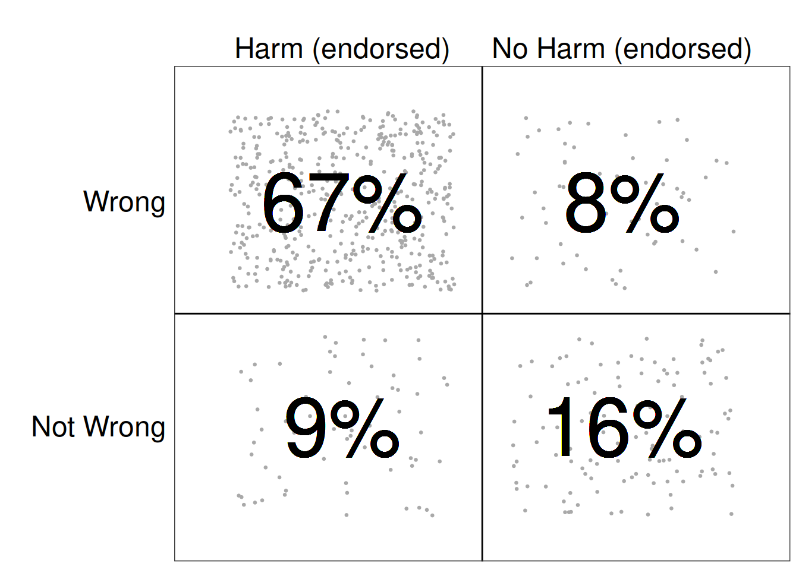

Moral Judgment as Categorization (MJAC)
morality
moral judgment
categorization
Perspectives in Psychological Science (2022)
Observed variability and complexity of judgments of ‘right’ and ‘wrong’ cannot be readily accounted for within extant approaches to understanding moral judgment. In response to this challenge, we present a novel perspective on categorization in moral judgment. Moral judgment as categorization (MJAC) incorporates principles of category formation research while addressing key challenges of existing approaches to moral judgment. People develop skills in making context-relevant categorizations. They learn that various objects (events, behaviors, people, etc.) can be categorized as morally ‘right’ or ‘wrong’. Repetition and rehearsal results in reliable, habitualized categorizations. According to this skill formation account of moral categorization, the learning and the habitualization of the forming of moral categories, occurs within goal-directed activity that is sensitive to various contextual influences. By allowing for the complexity of moral judgments, MJAC offers greater explanatory power than existing approaches while also providing opportunities for a diverse range of new research questions.
McHugh, C., McGann, M., Igou, E. R., & Kinsella, E. L. (2022). Moral Judgment as Categorization (MJAC). Perspectives on Psychological Science, 17(1), 131–152. https://doi.org/10.1177/1745691621990636
Moral Judgment as Categorization (MJAC)
It’s terribly simple. The good-guys are stalwart and true. The bad-guys are easily distinguished by their pointy horns or black hats and we always defeat them and save the day. Nobody ever dies…and everybody lives happily ever after. (Whedon 1997, 41:55)
In the above quotation from the TV show Buffy the Vampire Slayer, Buffy is being comforted by her mentor Giles. He paints a picture of morality where good and evil are easily distinguishable. He is, of course, lying. Even in this fantastical world of monsters and demons, there is no consistent, clear way to tell right from wrong.
Morality is a morass of complexity, and this complexity poses a considerable challenge to our understanding of how people make moral judgments. Drawing on moral philosophy, psychologists have adopted labels such as “deontology”, “utilitarianism”, as well as more niche concepts such as “virtue”, and “care” to help make sense of people’s varied judgments. Many of the questions about variability or apparent inconsistency in judgments have been understood in terms of people shifting in their implicit (or explicit) moral theories from deontological to utilitarian principles or vice-versa. However, attempts to reduce morality to pointy horns or black hats are ultimately doomed to fail, and despite important insights, no theory of moral judgment can yet fully account for the complexity of moral judgment.
In response to these challenges, we present “Moral Judgment as Categorization” (MJAC), which has three premises:
- The making of a moral judgment is a process of categorizing something as MORALLY RIGHT, or MORALLY WRONG, (or indeed NOT MORALLY RELEVANT).
- The process of categorization involved in the making of a moral judgment is a domain general one (not unique or specific to the moral domain).
- Moral categorization occurs as part of on-going goal-directed behavior and, as such, is highly dynamic and sensitive to a range of contextual influences.
We argue that contemporary dynamic approaches to concept and category formation (e.g., Barsalou 2003, 2017; Barsalou and Wiemer-Hastings 2005; see also Sloman, Lombrozo, and Malt 2008; Barrett, Wilson-Mendenhall, and Barsalou 2014) provide the best framework for making sense of the complexity of moral judgment. MJAC encompasses the same phenomena addressed by extant theories of moral judgment (and phenomena not directly addressed by these theories) but does so in a more parsimonious way. By assuming dynamism and context-sensitivity from the outset, MJAC is not subject to ad hoc additions or refinements to cope with variability in moral judgments or to account for less frequently discussed phenomena of moral judgment.
In what follows, we first discuss previous attempts to align moral psychology with the literature on categorization. Second, we present our model, MJAC, in more detail. Third, we assess the strength of evidence for MJAC by contrasting its assumptions, explanations, and predictions with existing moral judgment theories. Fourth, we address specific limitations of MJAC. Finally, we conclude by offering a brief summary of the key advantages and novel research avenues offered by MJAC.
Moral Judgment and Categorization in the Literature
We propose that research on categorization provides the best understanding of the complexities of moral judgment. Similar arguments have previously been proposed by Stich (1993), Harman, Mason, and Sinnott-Armstrong (2010), and Prinz (2005); however, these approaches were limited in their ability to account for the full dynamism and context-sensitivity of categorization or moral judgments.
Stich (1993) highlights common examples of moral ambiguity to illustrate that the concepts of right and wrong similarly cannot be defined by a set of necessary and sufficient conditions, thus rejecting the classical view of concepts (Stich 1993). However, it is not clear which alternative approach could be adopted in its place. In acknowledging limitations in existing approaches to categorization, Stich argued that developments in both categorization research and morality research should be considered in parallel.
Harman, Mason, and Sinnott-Armstrong (2010) also reject the classical view of concepts, proposing that moral judgments can be understood in terms of exemplar models of categorization: “stored representations of instances” of a concept (Harman, Mason, and Sinnott-Armstrong 2010, 234). However, categorizations can be highly variable, sensitive to contextual influences (including sensory-motor, proprioceptive, introspective, and situational influences), and occur as part of goal-directed activity – posing a challenge to exemplar models that assume that categorization is modular, stable, and implicitly taxonomic in organization (for review see Barsalou 2003).
Prinz (2005) describes the development of dynamic concepts and categories, and extends this to the moral domain, representing an important development in the literature. This approach, however, gives more weight to emotions as the source of moral judgments [e.g., “Emotions, I will suggest, are perceptions of our bodily states. To recognize the moral value of an event is, thus, to perceive the perturbation that it causes”, Prinz (2005), p. 99) while the role of the cognitive processes remains unclear. This is particularly challenging in view of recent work advocating a more measured view of the role of emotion in the making of moral judgment (Huebner, Dwyer, and Hauser 2009; Landy and Goodwin 2015; May 2014).
Finally, research on categorization processes has also had an indirect influence on theorizing about moral judgment. In presenting and defending the theory of dyadic morality (TDM, Schein and Gray 2018), the moral domain is described with reference to the broader literature on concepts and categories (e.g., Gray, Waytz, and Young 2012, 206; Gray, Young, and Waytz 2012, 42; Schein and Gray 2018, 42). However, TDM does not explicitly align with any specific categorization approach. Furthermore, TDM adopts an essentialist position (see below) that is inconsistent with modern understandings of categorization (Barsalou 2003; Harman, Mason, and Sinnott-Armstrong 2010; McCloskey and Glucksberg 1978; Mervis and Rosch 1981; Oden 1977; Rosch 1975; Rosch and Mervis 1975; Stich 1993), and this is problematic for explaining key phenomena in the moral domain.
Essentialism in categorization has been described a bias to perceive categories as natural kinds, or as having an underlying causal structure or “essence” (Gelman 2003, 7). For the purposes of the current discussion we highlight two types of essentialism. First, we note essentialism in the general population as part of every-day (moral) categorization (see Heiphetz 2020 for moe detailed discussion). Second, essentialism on the part of moral psychologists, whereby authors attempt to identify or define a moral “essence”, that distinguishes a moral domain as distinct from other domains, complete with moral specific psychological processes. We view this as a manifestation of the essentialism error in psychology (see Mesquita, Barrett, and Smith 2010). Indeed, the limitations of attempting to identify a moral “essence” (or necessary and sufficient conditions for something to be moral) have been well documented (Bucciarelli, Khemlani, and Johnson-Laird 2008; Knobe 2018; Sinnott-Armstrong 2012; Sinnott-Armstrong and Wheatley 2014; Stich 1993, 2018). MJAC does not attempt to define a moral “essence”. Instead, we assume that moral categorization involves domain general processes.
Introducing MJAC
The premise of MJAC is that moral judgment is the result of domain general skill1 acquisition in making relevant categorizations in particular instances (Barsalou 2003, 2017). Consider the formation of the ad-hoc goal-derived category THINGS TO PACK INTO A SUITCASE Barsalou (1991). Items that fall into this category (toothbrush, spare clothes, etc.) are not generally categorized as such on a day-to-day basis. The category emerges as required; that is, when a person needs to pack things into a suitcase. A person who travels frequently will be able to form the category THINGS TO PACK INTO A SUITCASE more readily due to repetition and the emerging skill. Barsalou (2003) argues that categorization more generally occurs through the same process. We propose that this basic process also holds for moral categories, that is, when people encounter a behavior in certain circumstances, they may learn that it is morally wrong, and this behavior becomes associated with the category MORALLY WRONG. Each subsequent time this behavior is encountered in a context where its moral value is relevant or it is identified as a member of the category MORALLY WRONG (either explicitly or implicitly), the person’s skill in deploying this category is strengthened. This same process holds for MORALLY RIGHT. With the increasing frequency of such categorizations, they become increasingly habitual and automatic (see Barsalou 2003).
A key strength of the approach adopted here is the ability to account for the dynamism and context-dependency (including sensory-motor, proprioceptive, and situational influences) that poses a challenge to other approaches (Barsalou 2003). Our interactions with (or exposure to) category members occur as part of goal-directed activity (e.g., general social interactions, gossip, political discussion, setting a ‘good’ example/attempting to appear likable or virtuous, engaging with fiction, jury duty, etc.). This allows for the encountering of an infinite number of categories (e.g., ad-hoc goal-derived categories) and category members. Here we are primarily concerned with the super-ordinate categories of MORALLY RIGHT and MORALLY WRONG. These categories display considerable variability. For example, consider the range of emotions associated with the behaviors categorized as MORALLY WRONG, including anything from murder to stealing office supplies. People may be shocked or angered by murder but might barely show mild contempt in response to stealing paper-clips. Similar variability is also observed for the same member of the category depending on the context. Consider (a) lying about the actions of a third party, to either cover for them or provide them with an opportunity to come forward themselves; (b) cold-blooded and calculated murder versus killing in a passionate rage, (c) a “massacre of innocent civilians” versus “collateral damage”.
Despite the variability and context-dependency, people’s categorizations show sufficient consistency to give the impression of relative stability. Bananas and apples are reliably categorized as fruit, just as murder and harm are widely categorized as wrong. Barsalou (2003, 2017) provides a framework for the emergence of this relative stability, while still accounting for the observed dynamism and context sensitivity.
Type-Token Interpretation
Barsalou (2003; 1999) proposes that the learning and maintaining of categorizations occurs through the process of type-token interpretation, defined as the binding of specific tokens (category members) to general types (category). For the category THINGS TO PACK INTO A SUITCASE (Barsalou 2003; Barsalou, Solomon, and Wu 1999), this entails identifying a given item (token) as something that you pack or do not pack into a suitcase (type). Crucially, this process can be implicit, simply involving treating an item as a member or not a member of a particular category within an appropriate context for action, in this case, packing it or not packing it. Skill in forming the categories emerges from repetition and rehearsal of the type-token interpretation; people become skilled at deploying categories that they encounter frequently.
Context Sensitivity
Type-token interpretation occurs every time a given token is encountered such that every categorization of a given token (object/item/event) is subject to contextual influences of the current situation. This results in dynamic and complex categories, without necessary and sufficient conditions, and without even stable best exemplars or prototypes. The properties of an object relevant to that particular context become salient, and the categorization process is accented by the details of the particular circumstances in which the actions are being taken. Stable or recurring properties (both object and contextual) can be learned, and their identification or recognition become a part of the subsequent engagement in the relevant goal-directed activity and the enactment of different relevant type-token interpretations of objects. This is dependent on the experience and learning history of the individual and not inherent in the categories themselves, however, which is what gives rise to the complex, dynamic aspects of concepts central to Barsalou’s approach.
Consider a study by Barsalou (1982). Participants were presented with a series of sentences involving particular items. For example: “The basketball was used when the boat sank”; or “The basketball was well worn from much use” (Barsalou 1982; see also Barsalou 2003). Following each sentence, participants were asked to verify whether particular properties were true for the item; for example whether or not “floats” is true for “basketball” following reading either of the above sentences. The fact that basketballs float is relevant to the first sentence, and thus this property is inferred from reading this sentence. In the second sentence, this property (while still true for basketball) is irrelevant and does not become salient by reading the sentence. Thus, while what is true for basketball does not change depending in the situation, the properties that are inferred in a given instance do. This is evident in that participants were faster at verifying “floats” as true for basketball following reading the first sentence than the second (Barsalou 1982, 2003). Other studies have yielded similar results, demonstrating that different sentences cause different properties to become salient depending on these properties’ relevance to the given sentence (Greenspan 1986; Tabossi 1988; Yeh and Barsalou 2006). The contextually relevant inferences made when we encounter category members are not limited to object properties but can also include situational and introspective inferences (e.g., Barsalou and Wiemer-Hastings 2005).
Habitualization
Highly skilled categorizations become habitualized (automatic/intuitive) to the point where these categorizations provide an illusion of “stable categories”. Typically, these “stable categories” mirror real-world categories or classes and social norms that are frequently and reliably encountered in day-to-day life. This reflects the use of these categories in (a) interacting effectively with the world and (b) communicating with others. Natural kinds and social norms would constitute prototypical classes of such frequently encountered and reliably implemented categories (e.g., Keil, Rozenblit, and Mills 2004). In some cases, categories that can be referenced to natural kinds may take on the causal rules that distinguish natural kinds. For example, fruit is distinct from vegetables in that the agreed scientific classification of fruit (in our culture) is as containing the seeds. This causal rule is not necessarily operationalized in everyday interactions with fruit and vegetables; however, in certain situations, it may be referenced to aid in the classification of ambiguous items.
More abstract categories are more difficult to define because there may not be a set of causal rules governing membership to draw on. There is a large body of literature documenting the search for causal rules or identifying characteristics of particular emotion categories, for instance, but no approach has fully answered this question (Griffiths 1997; see also Barrett, Wilson-Mendenhall, and Barsalou 2014; Mesquita, Barrett, and Smith 2010).
Barsalou and Wiemer-Hastings (2005) directly address this question of abstract concepts, demonstrating that the content of increasingly abstract concepts contains increasingly situational and introspective focus. Consider the possible inferences associated with the categorization of SOFA versus FREEDOM. Various properties of SOFA will remain relatively stable across contexts. However, to make sense, any conceptualization of FREEDOM needs to be embedded in a specific situational (e.g., freedom from oppression) or introspective (e.g., feeling free) context. Inferences regarding FREEDOM are necessarily more context-dependent. This results in greater situational or introspective inferences being made for abstract categories, while concrete categories allow for more object-level inferences.
The abstract nature of moral categories means they are similarly rich in situational and introspective inferences. That is, whether a particular behavior is viewed as right or wrong varies depending on the situation and may be categorized as right or wrong in different ways, specific to the context and the goal-directed activity in which the person is engaged. The link of introspection and the abstract nature of moral categories is supported by recent approaches that stress the tight coupling of moral judgments and emotions (e.g., Cameron, Payne, and Doris 2013; Huebner, Dwyer, and Hauser 2009; Royzman et al. 2014; Rozin et al. 1999; Valdesolo and DeSteno 2006).
As with the mapping of habitualized categorizations on to real-world natural kinds, moral categories may appear to follow principles or rules, reflecting social norms of society or a specific social group. A behavior that is encountered frequently and consistently identified as MORALLY RIGHT, may emerge as a “good example”, or a Token2 for MORALLY RIGHT. Over time, people develop a range of Tokens for the categories MORALLY RIGHT (and for MORALLY WRONG). Furthermore, similar behaviors may become categorized together, for example, continued identification of “hitting people” as WRONG, and “kicking people” as WRONG may lead a person to form a superordinate category CAUSING HARM TO PEOPLE, which is consistently identified as WRONG. This may then be taken a step further, and “don’t harm people” and “don’t harm animals” may merge to form INFLICTING HARM, which is consistently identified as WRONG.
The emergence of habitualized, highly generalized, morally grounded Tokens may form the basis of what we call values. Furthermore, as more and more Tokens are developed and become increasingly generalized, these generalized Tokens become arranged hierarchically in terms of severity. This essentially becomes our “moral code”. There is not necessarily an underlying set of rules (or moral principles) governing this moral code, it is based on a large collection of Tokens, and a process of categorization that is sensitive to context and on-going actions. Some of the generalized Tokens (values) may appear to exhibit sufficient powers of “governance” to constitute rules. However, these are not true rules; as with the mapping of stable categorizations onto natural kinds, it may be possible to construct plausible (and often true) causes for the associations that define many categories, however, the process of categorization remains grounded in type-token interpretation (rather than the rules that can be inferred from referencing observable categories, Barsalou 2003; Barsalou and Wiemer-Hastings 2005). MJAC provides a framework for the emergence of what appears to be relative stability in categorization while simultaneously accounting for the observed variability and context-dependency that pose a challenge to existing theories of moral judgment.
Applying MJAC
Moral Dumbfounding
The processes underlying moral judgment, according to MJAC, predict the phenomenon of moral dumbfounding. Moral dumbfounding occurs when people defend a moral judgment even though they cannot provide a reason to support it (Haidt 2001; Haidt, Björklund, and Murphy 2000; McHugh et al. 2017). Typically, moral dumbfounding occurs for harmless taboo behaviors (consensual incest, cannibalism involving a body that is already dead). Consider the learning of taboo behaviors as wrong through type-token interpretation and typical interaction with such behavior. The taboo nature of these topics means that they are consistently identified as morally wrong, without much discussion [the Scottish public petitions committee notably dismissed a call to legalize incest with no discussion at all; see Sim (2016)]. This leads to a high degree of stability in categorizing them as WRONG. However, while other behaviors may be discussed or disputed, generating a deeper knowledge surrounding the rationale for identifying as right or wrong, the taboo nature of these behaviors prevents them from being discussed. This means that a typical encounter with such behavior involves little more than identifying it as wrong, possibly with an expression of disgust, and changing the subject (Sim 2016). Identifying causal rules that govern the behavior’s membership of the category MORALLY WRONG is likely problematic, in that a person would have limited experience at attempting to do so. In this view, type-token interpretation of taboo behaviors logically leads to moral dumbfounding.
Phenomena similar to moral dumbfounding have been observed in the non-moral domain. While these have not been explicitly identified as “dumbfounding” we suggest that dumbfounding also occurs for categories other than MORALLY WRONG. For example, Boyd and Keil (Boyd 1989, 1991; Keil 1989; see also Griffiths 1997) found that participants struggled to explain their reasons for categorizing an imagined creature as A CAT or NOT A CAT. Descriptions of participants’ responding in such situations bear a striking similarity, whether the target categorization is in the moral domain or not. In discussing their work on the illusion of explanatory depth, Keil, Rozenblit, and Mills (2004) describe the sensation of being “surprised by our inability to explain something” (2004, 277). Similarly, in discussing moral dumbfounding, Haidt describes how people “express surprise at their inability to find supporting reasons” (Haidt 2001, 817). The illusion of explanatory depth and moral dumbfounding are likely phenomena with common underpinnings.
Categorizing people versus categorizing actions
In line with Barsalou and Wiemer-Hastings (2005), we have been describing the cognitive processes in relation to the development of the abstract categories MORALLY WRONG and MORALLY RIGHT. In reality, people do not deal with these abstractions, rather moral categorization is situated in specific contexts, occurring as part of goal-directed behavior. In some situations, we may identify specific actions as morally questionable or morally praiseworthy, while in others, we may identify specific actors as morally questionable or morally praiseworthy. While, the action or actor may belong to the super-ordinate category MORALLY WRONG, or MORALLY RIGHT (or NOT MORALLY RELEVANT), it is likely that in everyday interactions people are more concerned with the subordinate categories in question, for example, BAD/GOOD PERSON or BAD/GOOD ACTION.
Previous authors have argued that when people make moral judgments, the primary evaluation is of the character of the person committing the act (e.g., Uhlmann, Pizarro, and Diermeier 2015; Landy and Uhlmann 2018; see also Siegel, Crockett, and Dolan 2017; Siegel et al. 2018). MJAC does not adopt this position, rather we recognize that there are many potential contextual factors that influence whether the target of any given moral categorization is the actor or on the action (or both). The variability relating to the target of moral categorization can influence which super-ordinate category is eventually implicated, that is, whether the final judgment is MORALLY WRONG, or MORALLY RIGHT (or NOT MORALLY RELEVANT); for example, if a corrupt politician helps a neighbor with shopping, even though this action may be categorized as good, the actor is likely to still be categorized as a bad.
Moral Categorization Involving Known Others
MJAC assumes that moral categorization is dynamic and context-dependent. We propose that consideration of the goal-directed nature of moral categorizations provides a key insight into some of the contexts that may affect the target of a given categorization. Consider the following two scenarios:
- you find out that a colleague has been fired for stealing from your employer - they have been bringing home office equipment for their own personal use, and they have been exaggerating their expense claims;
- a close friend of yours reveals to you that they have been stealing from their employer - they have been bringing home office equipment for their own personal use, and they have been exaggerating their expense claims.
It seems intuitive that people should judge (b) differently from (a), and we predict that people will be more lenient in their judgments of (b) than of (a). Despite the historical paucity of research investigating the influence of the relationship between the person making a judgment and the apparent perpetrator Feltz and May (2017), recent findings support this prediction (Forbes 2018; Heiphetz and Craig 2020; Hofmann et al. 2014; Lee and Holyoak 2020; McManus, Kleiman-Weiner, and Young 2020; Weidman et al. 2020). Several studies have demonstrated that people appear to be more lenient in their judgments of people they are close to versus strangers (Forbes 2018; Hofmann et al. 2014; Lee and Holyoak 2020; Weidman et al. 2020). Further evidence that close others are judged differently to strangers has been found by Heiphetz and Craig (2020). They showed that a tendency to dehumanize racists (and sexists) is associated with a greater tendency to view strangers’ ambiguous actions as racially biased (or sexist), but not the ambiguous actions of friends (Heiphetz and Craig 2020). The importance of accounting for possible relationships in moral judgment research is not limited to the relationship between the observer and the relevant actors. Recent work has shown that people are judged more favorably for helping strangers than helping kin, while a failure to help kin is judged more harshly, suggesting a stronger obligation towards kin than towards strangers (McManus, Kleiman-Weiner, and Young 2020).
A further prediction is that for (b), the target of categorization will be the action rather than the actor. People are motivated to see close others positively (Forbes 2018; Murray, Holmes, and Griffin 1996a, 1996b). If faced with a situation where a close other committed a moral transgression, people would be motivated to avoid making a negative judgment of the person (Ditto, Pizarro, and Tannenbaum 2009; Murray, Holmes, and Griffin 1996a, 1996b; Proulx and Inzlicht 2012). One way to avoid this is to make the target of the categorization the action rather than the actor.3
In making the action the target of the categorization rather than the actor, people can reduce the degree to which they view their close others negatively. However, this strategy is implemented in addition to making judgments that are more lenient. Making more lenient judgments about specific transgressions based on the actor introduces context-specific inconsistency in regard to the categorization of that transgression. MJAC predicts that this inconsistency may threaten the long term stability of the categorization. Specifically, we predict that leniency towards close others for a specific behavior should eventually lead to more general leniency towards that behavior. This development of more general leniency should occur independently of deliberate attempts to present as consistent (although it could be accelerated by attempts to be consistent). For instance, an increased tolerance of “locker room talk” by people who would otherwise disapprove of sexism.
Moral Categorization Involving Unknown Others
Drawing on the goal-directed nature of moral categorization, we further predict any prospective relationships between the observer and the actor. Success in social interactions involves successfully predicting the actions of others (Waytz and Young 2018). As such, a key goal of moral categorization is to distinguish “good” from “bad” people (Uhlmann, Pizarro, and Diermeier 2015), by attempting to identify a person’s moral “essence” (e.g., Dunlea and Heiphetz 2020; Heiphetz and Dunlea 2019), or “character” (N. Klein and O’Brien 2016; Siegel, Crockett, and Dolan 2017; Siegel et al. 2018). This enables people to establish relationships or pursue continued interactions with “good” people, and to limit their interactions with “bad” people (or at least treat interactions with “bad” people with caution).
Thus, evaluations of strangers’ actions should show a bias for categorizing the actor rather than the action. Furthermore, this bias should be more pronounced in situations when people anticipate that there may be follow-up interactions with the stranger. Research on reciprocity and repeated interactions with strangers or partners (e.g., Fehr and Gächter 2000, 2003) provides an ideal framework that could be adapted to test this prediction. In conditions where participants are partnered, their initial evaluations should be more focused on their partner’s character than in conditions where participants interact with a new “stranger” for each trial.
Drawing on the well-established tendency for negative information to be weighted more heavily than positive information (e.g., Kahneman and Tversky 1979; Rozin and Royzman 2001; A. Smith 1759), we predict that people will be more sensitive to negative actions than positive actions. Indeed, this has been shown to be the case. N. Klein and O’Brien (2016) presented participants with vignettes describing changes in patterns of behavior. Participants were asked to indicate how many consecutive instances of the new behavior would need to occur to convince them that the actor’s “moral character had transformed” (N. Klein and O’Brien 2016, 152). Participants perceived negative transformations much quicker than positive transformations, which was true for commencing negative behaviors and ceasing positive behaviors (N. Klein and O’Brien 2016). A general heightened sensitivity to negative information means that people appear to be quicker to categorize an actor as “bad” (vs. “good”).
This identification of “bad” actors appears to be present from an early age, such that even pre-verbal infants show a preference for good actors over bad actors (Hamlin, Wynn, and Bloom 2007, 2010; Hamlin and Wynn 2011; cf. Margoni and Surian 2018; Schlingloff, Csibra, and Tatone 2020; Steckler, Woo, and Hamlin 2017). We do not claim that infants in these studies have acquired fully developed categories of MORALLY WRONG and MORALLY RIGHT, and that they assign different actors to these categories. Rather, type-token interpretation predicts that category members should be treated as similar, independently of whether or not a person can describe the category, or even the relationship between the category members.4 Previous research has demonstrated that we implicitly treat similar items as similar even though we may not be able to articulate what makes them similar (e.g., recognising ‘good decks’ from ‘bad decks’ in the Iowa Gambling Task: Bechara and Damasio 2005; Damasio 1994; or implicit identification of abstract patterns, Proulx and Heine 2009; Whitson and Galinsky 2008).
These findings should not be interpreted as categorizations of “bad” actors are more stable than categorizations of “good” actors. Indeed, the opposite is the case (Siegel et al. 2018), where beliefs about “bad” agents are more volatile than beliefs about “good” agents. MJAC explains this volatility in the categorization of “bad” agents relative to “good” as emerging due to the relative consistency with which categorizations are made. As noted by Siegel et al., “bad people often behave morally, but good people rarely behave immorally” (2018, 750). The contexts in which actors are categorized as “good” are more consistent than the contexts in which they are categorized as “bad”. This consistency makes the categorization “good” actor a more stable categorization than “bad” actor. This apparent stability categorizing “good” actors relative to “bad” actors can also be seen in research on moral essentialism, people show a greater tendency to attribute essence based on moral goodness than moral badness (Heiphetz 2020; Newman, Bloom, and Knobe 2014).
The findings discussed above reflect the goal-directed nature of moral categorization. Specifically, people are motivated to understand and predict others’ actions to guide future interactions (Uhlmann, Pizarro, and Diermeier 2015; Waytz and Young 2018). If we understand that some behaviours are associated with positive experiences and some with negative outcomes, then it is not surprising that we show a preference for people who behave in a more positive way, even from a very young age (Hamlin and Wynn 2011).
Interestingly, distinguishing between categorizing an action or categorizing an actor has implications for behavior, specifically when the actor in question is the self. In a series of studies by Bryan, Adams, and Monin (2013), participants took part in tasks in which cheating for financial gain (at the expense of the experimenter) was possible. When task instructions discouraging cheating used the term “cheater”, participants’ rates of cheating was significantly lower than when the term used was “cheating”. Committing an action that might fall into the category MORALLY WRONG is less aversive than being categorized as a BAD PERSON.
Examining the Explanatory Power of MJAC
To evaluate the strength of evidence for MJAC we turn to examine its explanatory power compared to several existing theories of moral judgment. We argue that MJAC ultimately provides greater explanatory power than those models while also keeping the account of the processes involved in moral judgment parsimonious with the currently dominant account of general concept and category formation.
We group the range of extant approaches roughly into two. On the one hand, it may be that variations in moral judgments are a product of variations in the basic functioning of the cognitive system. The expansive range of dual-processing theories has a long history of addressing cognitive variation in such terms. Still, in the case of morality, there are a number of such theories highlighting slightly different forms of a dual-processing distinction. Here we compare MJAC with three theories, each with a slightly different take on the dual-processing view: Greene’s dual-process model (Greene 2008, 2016; Greene et al. 2001, 2004); more recent “softer” interpretations of Greene’s approach (Byrd and Conway 2019; Conway et al. 2018; Conway and Gawronski 2013; Goldstein-Greenwood et al. 2020); and the model-based/model-free interpretation proposed by both Cushman (2013) and Crockett (2013).
On the other hand, it may be the case that moral judgment arises due to morality-specific processing, where some conditions are met to trigger such morality-focused cognition. MJAC, which follows a dynamical theory of categorization that undermines any form of reliable essence to moral categories runs counter to this claim. We use the Theory of Dyadic Morality (TDM, Gray, Waytz, and Young 2012; Gray, Young, and Waytz 2012; Schein and Gray 2018) as a foil to explore this issue.
A key difference between MJAC and all of the alternative approaches that we identify is that it does not align particular aspects of morality or moral judgment with a single underlying process or processing distinction. On the face of it, this might be seen as complicating matters rather than making sense of them; however, we argue that it has two significant benefits. Firstly, it acknowledges the already clear evidence of complexity and variety when it comes to the making of moral judgments. Secondly, it makes available a rich set of theoretical resources parsimonious with research in a more general domain of cognitive psychology.
In what follows, we show that the evidence runs against any straightforward mapping between single moral judgment dimensions and underlying cognitive processing. This helps distinguish our account from those already extant in the literature while also providing reasons for seeing moral judgment as being underpinned by more context-sensitive or generic forms of processing.
We then show how what appears to be a wealth of unreliable and inconsistent findings in the domain of moral judgment can be seen as suggesting parallels between behavior in moral judgment tasks and well-studied phenomena in categorization research. While only suggestive at present, MJAC, at the very least, predicts that such similarities should exist and offers a framework within which systematic relationships between these various phenomena can be sought.
Beyond Unidimensional Conceptions of Morality
Dual-Process Theories of Moral Judgment
The three dual-processing theories of moral judgment that we address here each use some form of one-to-one mapping between a key dimension of moral judgment and the underlying differences in information processing expressed in that dual-processing account. Identification of the moral dimension is usually made through categorization of responses to challenges such as the trolley problem (the moral judgment literature is, unfortunately, replete with vehicular homicides).
For instance, Greene’s theory describes the distinction between deontological and consequentialist outcomes to moral judgments as a qualitative difference in processing, where deontological judgments are grounded in implicit, emotional, automatic processing, and consequentialist judgments involve deliberate, controlled processing (Greene 2016). Byrd and Conway’s (2019) softer approach is less dichotomous, such that deontological judgments are viewed as involving relatively more affective processing. For both Crockett’s (2013) and Cushman’s (2013) model-free vs. model-based accounts the logic is similar, though the emphasis is reversed. While for Greene (2016), and Byrd and Conway (2019), the form of processing drives the form of moral judgments, for both Cushman and Crockett, the framing of the moral task drives the kind of processing that is likely to result. Crockett and Cushman both avoid the simple deontological/consequentialist divide but focus instead on evaluating either moral actions or moral outcomes, which give rise to model-free or model-based judgments respectively. As with Greene and Byrd and Conway, however, they hold a stable one-to-one mapping between this dimension of the content of the moral judgment and the underlying processing.
The clarity of these mappings is appealing, but we argue here that the complexity and inconsistency of the findings in the existing literature on these relationships are disconfirming for these accounts (e.g., De Neys and Białek 2017; Gamez-Djokic and Molden 2016; Gubbins and Byrne 2014; Körner and Volk 2014; McPhetres et al. 2018; Pizarro and Bloom 2003; Reynolds and Conway 2018). We note that research on categorization also predicts reliably distinguishable patterns of response along the lines of many dual-processes accounts, distinguished by individual learning histories and experience in performing given categorizations in different circumstances. For clarity and consistency, we will refer to this distinction as one between habitual versus deliberative responses, positioned at either end of a continuum (Kruglanski and Gigerenzer 2011).
We follow the categorization research in identifying as a key dimension the extent to which specific categorizations (instances of type-token interpretations) are well-rehearsed and thus, become fluent, stable, and habitual within frequently enacted goal-directed activities (Barsalou 1999, 2003, 2017). Less experience with a particular type-token interpretation will result in less consistent deployment of the category and demand more deliberative consideration of the situation and appropriate action.
Therefore, this key dimension in underlying processing is not predicted by MJAC to map straightforwardly onto any aspect of task content or framing in moral judgment, such as habitual judgments being deontological while deliberative ones are consequentialist. While well-worn deontic exhortations (“It’s wrong to hurt people”, “Thou shalt not kill”, “You shouldn’t hit your sister”) will no doubt develop a strong habitual foundation, within the MJAC framework, consequentialist judgments that are well-practiced will also be supported by habitual responses [associated with quick intuitive or affective reactions to moral judgments as studied by deneys_dual_2017; Gubbins and Byrne (2014); Reynolds and Conway (2018)]. Consequentialist reasoning, likely requiring explicit moral argument to arise, may be somewhat less commonly practiced, but also some deontological situations have novel characteristics that therefore also require deliberation [as illustrated by the likes of Gamez-Djokic and Molden (2016); Körner and Volk (2014); McPhetres et al. (2018); Pizarro and Bloom (2003)).
This variation in the relationship between deontological and consequentialist judgments and the ways (habitual vs. deliberative) they get made undermines both Greene’s and Byrd and Conway’s accounts. Neither Cushman (2013) nor Crockett (2013) connect the moral perspective with a specific form of processing. Still, they do map the distinction between action- and outcome-focused judgments onto the distinction between model-free and model-based processing. While this can accommodate such variability in deontological or utilitarian perspectives depending on circumstances, it runs afoul of what is termed the “doctrine of double effect” (Doris 2010; Mikhail 2000). The doctrine of double effect concerns the difference between causing harm as a means to an end being seen as different to causing harm as a side-effect of achieving the same ends, even when the actions taken are the same (e.g., Mikhail 2000; see also R. A. Klein et al. 2017). It is unclear what about such cases could trigger a difference in processing that would explain differential judgments for model theories. These theories are also challenged by versions of the trolley problem presented in virtual reality environments (Francis et al. 2016), where a usual pattern of responding (preference for inaction over pushing someone onto the track to stop the tram) was reversed. This runs directly counter to the predictions of the action-outcome mapping to form of processing made by these model theories. However, the shift to a more deliberative, calculating mode of thinking is perhaps less surprising for MJAC, given the novelty of the mode of presentation.
According to MJAC, the making of moral judgments is dynamical, and context-dependent, and occurs as part of goal-directed activity; thus we should expect to see this observed variability that poses a challenge to any stable mapping between content and form of processing or judgment outcome. MJAC also assumes that relative stability in moral categorizations emerges as a result of continued and consistent type-token interpretation, such that particular categorizations become habitualized (and hence intuitive). Thus, we should expect a variety of contextual factors affecting people’s moral judgments, not limited to any single key dimension. Constraints on space mitigate against exploring each of these in detail. Still, the sheer range of such factors that have been reported offers compelling evidence that whatever underlies variation in moral judgment is a complex of issues and is not unidimensional in any given situation [the reader is referred to the wealth of literature examining such factors as emotional influences, Cameron, Payne, and Doris (2013); intentionality, evitability, benefit recipient, Christensen et al. (2014); Christensen and Gomila (2012); action-outcome distinction Crockett (2013); cushman_action_2013; trustworthiness and social evaluation Everett, Pizarro, and Crockett (2016); Everett et al. (2018); personal-impersonal distinction, Greene et al. (2001); doctrine of double effect, Mikhail (2000); level of physical contact, Valdesolo and DeSteno (2006); order effects, Wiegmann, Okan, and Nagel (2012)).
Theory of Dyadic Morality
The theory of dyadic morality (TDM, Gray, Young, and Waytz 2012) that has recently been presented by Gray and colleagues would also seem to be grounded in generic categorization processes [Gray, Waytz, and Young (2012), p. 206; gray_mind_2012, p. 102; Schein and Gray (2018), p. 42]. As such, the approach is not heavily focused on a single processing dimension explaining moral judgment (or the variation therein). While TDM has not been identified with a specific theory of categorization, Gray et al. ((2012, 206) make reference to “prototypes or exemplar sets”, and it is here that the divergence with MJAC becomes clear. Barsalou (2003) summarized a range of findings indicating that neither prototype nor exemplar approaches can adequately explain the dynamic and variable nature of performance in categorization tasks.
More problematically, though TDM has been linked to exemplar and prototype theories, its proponents highlight moral situations as those involving a set of necessary and sufficient conditions - those which involve “an intentional agent causing damage to a vulnerable patient” (Schein and Gray 2018, 33), or “an intentional moral agent and a suffering moral patient (Gray, Young, and Waytz 2012, 101). Such appeals to essentialism are at odds with decades of research demonstrating dynamism and context-dependency in categorization (Barsalou 1982, 1987, 2003, 2017; Harman, Mason, and Sinnott-Armstrong 2010; McCloskey and Glucksberg 1978; Mervis and Rosch 1981; Oden 1977; Rosch 1975; Rosch and Mervis 1975; Stich 1993), and returns us to a unidimensional approach to moral judgment, this time identifying the moral character of a situation as the extent to which it involves harm. While intuitively appealing, this does not bear empirical scrutiny.
Proponents of TDM argue that even in ostensibly harmless moral transgressions, people perceive harm (Gray, Schein, and Ward 2014). This perception of harm guides participants’ judgments in moral dumbfounding scenarios (Schein and Gray 2018; Schein 2020). Dumbfounding is displayed when people maintain a moral judgment in the absence of a means of justifying their judgment, usually evoked by vignettes of supposedly “harmless wrongs” such as consensual incest or cannibalism of an already-dead body (Haidt, Björklund, and Murphy 2000; McHugh et al. 2017). Schein and Gray (2018) point to a series of studies by Royzman, Kim, and Leeman (2015), to support their appeal to perceived harm in the “moral dumbfounding” paradigm. royzman_curious_2015 investigating the case of consensual incest, included additional questions that appear to demonstrate that people’s judgments were (at least in part) grounded in perceptions of harm.
However, more recent dumbfounding work fails to support the TDM perspective on this matter (McHugh et al. 2020). In addressing specific methodological limitations of the Royzman, Kim, and Leeman (2015) study, McHugh et al. (2020) found that people do not cite harm as a reason for their judgment. Participants were asked to judge a vignette describing consensual incest, asked to provide reasons for their judgment, and then provided with the questions examining perceptions of harm developed by Royzman, Kim, and Leeman (2015). The responses to the harm-based questions provided one measure of participants’ perceptions of harm, that is, did participants endorse a harm-based reason for their judgment when it was presented to them? Another measure of perceptions of harm was taken by coding the reasons provided for whether or not participants mentioned harm as justifying their judgment. Figure 1 presents a matrix plotting rows of participants’ judgments (wrong vs. not wrong) against columns of their endorsing of harm (left matrix), or whether or not they mentioned harm (right matrix) across three studies (N = 723).5 According to TDM, all participants should be located in either the top left (harm/wrong) or the bottom right (no harm/not wrong) quadrants, the responding of participants in either of the other two quadrants cannot be explained by TDM.

Even in taking the most generous measure of perceptions of harm (left), the responding of 17% of participants (9% plus 8%) cannot be explained by TDM. Taking the stricter (and arguably more accurate, see McHugh et al. 2020) measure of perceptions of harm further reduces the explanatory power of TDM – only 45% of participants responded in line with the predictions of TDM. In addition to evidence for harmless wrongs, the same set of studies had questions explicitly related to the wrongness of behaviors linked with harm and potential harm. While participants were not explicitly asked about their perceptions of harm for boxing or contact team sports, they were presented with a question “How would you rate the behavior of two people who engage in an activity that could potentially result in harmful consequences for either of them?”. Only 50% of participants across two studies (N = 613) rated this as wrong, providing clear evidence for the idea of “wrongless harms” that is rejected by TDM (Schein and Gray 2018).
So far, there is nothing uniquely “moral” in moral judgment. The people researchers have studied do not appear to apply any given mode of processing or content in a sufficiently consistent manner to provide stable account of moral judgment. We argue, therefore, that a more successful approach is to explore what the capacity to identify morally right and morally wrong actors, actions and outcomes has in common with people’s capacity to identify categories more generally.
Moral Phenomena with Domain General (Categorization) Explanations
MJAC assumes that moral categorization is a dynamical, context-dependent process, and as such, we predict the same phenomena as have been found within the categorization literature at large. In this section, we briefly outline some evidence for this predicted similarity, though we note that at present, these patterns are more suggestive than conclusive. However, we argue that these patterns should be seen not as noise obscuring an underlying stable moral category but a signal of the complexity of the processes that give rise to that category. We believe that the phenomenon of moral judgment is no more undermined or challenged by this complexity than the cognitive psychology of concepts, and category formation is more generally. These include such phenomena as order effects, language effects, the impact of emotions, and typicality of instance.
Order effects
In morality research, responses to different moral dilemmas have been found to vary depending on the order of presentation (Petrinovich and O’Neill 1996; Wiegmann, Okan, and Nagel 2012). MJAC can explain these in the same way as order effects in non-moral categorization are explained. That is, they occur as a result of priming. The scenario that is presented first causes some features of the second scenario to become more salient. The salience of these features leads to a different judgment than if the initial scenario was not presented. In the case of categorization, the effect of this type of priming is primarily studied concerning reaction times. For example, a study by Barsalou (1982, 2003) showed that reading sentences that made particular features of a given object salient influenced the speed at which participants verified related properties of the given object (see also Tabossi 1988). We predict similar reaction time variability should be observed when participants are primed with relevant properties for making moral categorizations.
There is also evidence that priming people with particular concepts can influence their subsequent categorizations. In a study by Higgins, Bargh, and Lombardi (1985), participants completed a task in which they were required to create sentences from a selection of words. Some of the words presented were selected to prime a particular concept, e.g., “bold”, “courageous”, and “brave” primed “Adventurous”; “careless”, “foolhardy”, and “rash” primed “Reckless” (Higgins, Bargh, and Lombardi 1985, 63). Participants were later presented with a description of ambiguous behavior. It was found that the categorizations of these behaviors were influenced by the concept that was primed. A similar study demonstrated the same effect (Srull and Wyer 1979). We predict that this same effect should occur for moral categorizations, for example, participants responses to descriptions of behavior that could be viewed as either “moral” or “self-righteous”, or a behavior that could be viewed as either “immoral” or “crafty” should be subject to the same effect as described by Higgins, Bargh, and Lombardi (1985).
Language effects
Though the influence of language on the categories available to a given person has a long and controversial history in psychology, recent research has made it increasingly clear that a given language forms a significant constraint on categorization tasks due to the resources of vocabulary and grammatical structure that it provides (Cubelli et al. 2011; Davidoff 2001). Second language acquisition also impacts how categorizations are formed, as a person learns to deploy new linguistic resources in the service of their goal-directed activities (Athanasopoulos 2007)
People’s moral judgments have been shown to vary depending on whether they read a moral scenario in their first language or in a second language (the ‘foreign language effect,’ e.g., Cipolletti, McFarlane, and Weissglass 2016; Costa et al. 2014; Driver 2020; Geipel, Hadjichristidis, and Surian 2015; Hayakawa et al. 2017). Specifically, people appear to be more willing to endorse action in the Footbridge/Push version of the trolley dilemma when this dilemma is presented a language other than their native language. According to MJAC, deontological judgments become intuitive as a result of consistency across contexts. The changing of the language presents a novel context, which means the inferences associated with the regular context (e.g., emotional inferences) of encountering or this scenario are not as salient. Evidence for this interpretation comes from research investigating people’s reactions to non-moral taboo words in their first language vs. a second language. Harris, Ayçiçeĝi, and Gleason (2003) measured skin conductance of English speakers and Turkish speakers when rating different types of words in their first language and in their second language. It was found that (non-moral) taboo words led to greater arousal when presented in participants’ first language than when presented in a second language (see also, Colbeck and Bowers 2012), suggesting that the emotional inferences associated with the footbridge dilemma are less salient when it is presented in a foreign language.
Emotion effects
Emotion is perhaps the most widely discussed contextual influence on moral judgments (e.g., Cameron, Payne, and Doris 2013; Giner-Sorolla 2018; Huebner, Dwyer, and Hauser 2009; Landy and Goodwin 2015; May 2014; Prinz 2005; Royzman et al. 2014; Rozin et al. 1999; Russell and Giner-Sorolla 2011; Valdesolo and DeSteno 2006). Above, we have outlined how specific emotions may become associated with particular types of judgment; that is, the emergence of relative stability in making specific categorizations is linked with consistency in relevant contextual features, where the relevant contextual features include emotions. In other words, the emotions that may be experienced when a moral categorization is learned (or reinforced/consolidated) are likely to also be present during later categorizations. A corollary of this is that the experience of the specific emotion may provide a contextual cue, reminding people of previous experiences, making a particular categorization more salient (e.g., Barsalou 2003; Barsalou and Wiemer-Hastings 2005; Damasio 1994; Damasio and Damasio 1994; Rosenfield 1988).
In line with the prediction that manipulations designed to suppress the salience of these contextual factors (S. M. Smith and Vela 2001), we predict the same type of manipulations should have similar effects on the influences of emotions on moral categorizations. The foreign language (Colbeck and Bowers 2012; Costa et al. 2014; Driver 2020; Geipel, Hadjichristidis, and Surian 2015; Harris, Ayçiçeĝi, and Gleason 2003; Hayakawa et al. 2017) effect described above provides some evidence for this, whereby the salience of the emotional content is reduced by being presented in the second language. Similar effects should be observed using mindset manipulations (Igou 2011; Igou and Bless 2007).
The specific contextual influences discussed above provide just a sample of the broader contextual factors known to influence the making of moral judgment. MJAC assumes that moral judgments are dynamical and context-dependent, and as such, it is the approach that is best positioned to understand the diverse contextual influences on moral judgment. It is beyond the scope of the current paper to describe and account for all the known contextual influences on moral judgment (e.g., an incomplete list would include: Bostyn, Sevenhant, and Roets 2018; Christensen et al. 2014; Christensen and Gomila 2012; Costa et al. 2014; Cushman et al. 2012; Everett, Pizarro, and Crockett 2016; Everett et al. 2018; Forbes 2018; Francis et al. 2016; Francis et al. 2017; Lee and Holyoak 2020; Petrinovich and O’Neill 1996; Rozin et al. 1999; Schein 2020; Timmons and Byrne 2019; Uhlmann, Pizarro, and Diermeier 2015; Valdesolo and DeSteno 2006; Vasquez et al. 2001; Vasudev and Hummel 1987). However, MJAC predicts understanding these diverse context effects depends on (a) accounting the learning history (e.g., in the cases of emotional influences and the foreign language effect) and, (b) viewing moral categorization as occurring as part of goal-directed activity (e.g., categorization of actor versus action discussed above). Incorporating both of these considerations into a program of research inevitably leads to attempts to make the study of moral judgment reflective of real-world moral decision making (Bauman et al. 2014; Bostyn, Sevenhant, and Roets 2018; Gilligan 1977, 1993; Hester and Gray 2020; Hofmann et al. 2014; Schein 2020; Watkins 2020).
Typicality
Finally, one of the most salient phenomena within the field of categorization concerns the fact that there are “better” and “worse” examples of any given category (McCloskey and Glucksberg 1978; Oden 1977), for example, a chair is viewed as a more typical member of the category FURNITURE than bookends (McCloskey and Glucksberg 1978). Such judgments are made even for those categories with supposedly logical or sharp boundaries such as geometric figures (Bourne 1982; Feldman 2000).
MJAC predicts that this same phenomena of typicality should be observed for moral categorizations, e.g., cold-blooded murder versus violence in pursuit of a cause. We further predict that relative typicality should be related to the relative consistency with which category members are identified as members of the given category (and should be independent of perceived severity). This facet of moral judgment has already seen some discussion in the existing moral judgment theoretical literature. Cushman (2013, 282) makes a passing reference – that pushing someone “with your hands” is more typically harmful than pushing someone “with your buttocks”. However, typicality sees more substantial discussion in the context of TDM (Gray and Keeney 2015; Schein and Gray 2018).
Typicality ratings in moral judgments, as described by TDM, are related to the degree to which a given scenario matches the defined prototype of morality, as an “intentional agent causing damage to a vulnerable patient” (Schein and Gray 2018, 32). An act that more clearly involves harm is rated as more typically wrong than an action where the perceived harm is less. Similarly, if there are evident intentional agent and vulnerable patient, an action is rated as more typically wrong than if the actors are more similar in their intentionality and vulnerability (Gray and Keeney 2015; Schein and Gray 2018).
This account of typicality is based on assumptions related to content (agent-patient, harm) and does not inform our understanding of the cognitive processes underlying moral judgments. As such, it cannot clearly distinguish between typicality and severity. Indeed the strong overlap between severity of an act and it’s typicality as an example of moral wrongness is acknowledged: “By definition, more severe acts are more immoral; that is, they are better examples of the category”immorality” (Gray and Keeney 2015, 860).
With MJAC, we propose that typicality is related to both frequency and consistency of exposure; that is, behaviors that are frequently encountered and consistently identified as members of a given moral category should emerge as typical category members. Given the consistency with which harm related transgressions are identified as wrong, the emergence of the prototypical template described by Gray and colleagues is not surprising (Gray and Keeney 2015; Schein and Gray 2018). However, we attribute these typicality ratings to the learning history rather than to perceptions of harm and of agents and patients.
Given the possible confounding influence of severity on typicality ratings, unpacking this difference in interpretation will prove challenging; however, we believe it will be a worthwhile endeavor. We hypothesize typicality ratings are related to the learning history and not linked to specific content. This predicts differences in typicality ratings when controlling for severity (either by focusing on harmless dilemmas or by keeping the severity of harm constant). This also predicts differences in typicality ratings within populations, through individual differences in moral values (e.g., Graham et al. 2012; Haidt and Joseph 2008), and between populations through cultural variation (e.g., Haidt, Koller, and Dias 1993). Furthermore, this view of typicality of moral categorizations predicts that perceptions of typicality will be context sensitive, that is intra-personal variability should be observed depending on current context, and crucially depending on current goal-directed activity. A professor grading papers would rate straight plagiarism as more typically wrong than plagiarism by omitting references. Whereas when not grading papers, the same professor may be more concerned with the ethics of her colleagues’ precarious contracts and entirely indifferent to the shortcuts students may take in their assignments. Or a sports fan may claim to view cheating as wrong, where different cheating behaviors vary in their typicality (e.g., overt fouling, cynical fouling, feigning injury so that the referee penalizes the other team) however, the same fan may turn a blind eye to these behaviors when committed by members of the team she supports.
It is worth noting that this sensitivity to the context of moral judgment implies that the importance of understanding moral judgments in more real-life contexts rather than through the study of abstract decontextualized dilemmas has been well documented (e.g., Bauman et al. 2014; Bostyn, Sevenhant, and Roets 2018; Gilligan 1977, 1993; Hester and Gray 2020; Hofmann et al. 2014; Schein 2020; Watkins 2020). By focusing specifically on context-sensitive categorizations occurring as part of goal-directed activity, MJAC offers a framework for attempting to make the study of moral judgments more reflective of the making of moral judgments in everyday life. Furthermore, in recognizing the broader array of contextual influences on moral categorizations, rather than focusing on specific contextual influences on specific types of judgments, MJAC is uniquely positioned to incorporate known context effects into a coherent parsimonious framework. This would provide opportunities for the combined influences of these contextual factors to be studied relative to each other, with the potential to identify clear boundary conditions to understand how and when specific contextual factors influence moral categorizations more than others.
Summarizing the Differences Between MJAC and Existing Approaches
Above, we have outlined how MJAC differs from existing theories in terms of assumptions and explanation. These theories make assumptions based on content, and this results in essentialist theorizing, either implicit or explicit attempts to define an “essence” of morality. In contrast, MJAC rejects essentialism, instead assuming moral categorizations are dynamical, context-dependent, and occurring as part of goal-directed activity. Each of the theories discussed is explicitly or implicitly (e.g., Schein and Gray 2018, 41) based on dual-process assumptions, with related dichotomous assumptions regarding the cognitive mechanisms (where these mechanisms are specified). MJAC does not assume distinct, separable processes, adopting type-token interpretation, occurring as part of goal-directed activity (Barsalou 2003, 2017), as the mechanism that underlies moral categorization. These differences in assumptions underlie the differences in the explanation discussed above. These differences are summarized in Table 1.
Table 1: Specific points of divergence between MJAC and existing theories
| Greene’s Dual-process theory | “Soft” dual-process theory | Model-based accounts | TDM | MJAC | |
|---|---|---|---|---|---|
| Assumptions: | |||||
| Content | Deontology-utilitarianism / personal-impersonal | Deontology-utilitarianism | Action-outcome | Harm-based, dyadic | Dynamical Context-dependent Goal-directed |
| Moral “Essence” | (Implicit) | (Not discussed) | (Implicit) | Explicit | Rejected |
| Processes | Dual-processes | Dual-processes | Dual-processes | (implicitly dual-process) | Continuum |
| Mechanisms | Intuition (emotion) / cognition | Emotion / cognition | Model-based / model-free | Categorization (unspecified) | Type-token interpretation |
| Phenomena Explained: | |||||
| Dumbfounding (harmless wrongs) | (Not discussed) | (Not discussed) | Explained | Denied | Explained: learning history |
| Wrongless harms | (Not discussed) | (Not discussed) | (Not discussed) | Denied | Explained: learning history |
| Typicality | (Not discussed) | (Not discussed) | (Not discussed) | Matching of “prototype” | Context-dependent |
| Contextual influences | Specific: Personal-impersonal | Specific: Emotion / cognition | Specific: Action-outcome | Specific: Harm-based |
Challenges, Limitations, and Responses
MJAC assumes that both relative stability and various contextual influences can be understood in terms of the learning history of the person. Given this assumption, a key challenge associated with MJAC is that it is impossible to gain access to the complete learning history of any person. That said, this limitation is not specific to MJAC; learning influences on moral judgment have been widely discussed (e.g., Campbell 2017; Crockett 2013; Cushman 2013; Haidt 2003; Kohlberg 1969, 1985; Narvaez 2005; Pizarro and Bloom 2003; Railton 2017). MJAC proposes making the role of the learning history an explicit consideration in attempting to understand the making of moral judgments. This will be a challenging yet, in our view, worthwhile endeavor, integrating a diverse range of methods and requiring greater interdisciplinary collaboration between the various domains of moral psychology.
Effects not Directly Predicted by MJAC
Despite predicting a broad range of contextual variability, there remain some influences on moral judgment that are not directly predicted by MJAC. Three such phenomena are the doctrine of double effect, moral luck, and moral conviction. While not directly predicted, these phenomena further illustrate the variability and complexity that theories of moral judgment must account for.
Firstly, the doctrine of double effect is the name given to the finding that people view causing harm as a means to achieving a goal as worse than causing harm as a side-effect of achieving a goal (Doris 2010; Mikhail 2000). Above, we have presented the doctrine of double effect as a limitation of model-based approaches (Crockett 2013; Cushman 2013); the action-outcome distinction does not adequately explain why people should make a distinction between harm as a means and harm as a side effect (henceforth, means-side effect). Similarly, this means-side effect distinction is not directly predicted by MJAC. Interestingly, it has been found that people apply this distinction even though they cannot reliably articulate it (Cushman, Young, and Hauser 2006; Hauser et al. 2007). This suggests a similarity with moral dumbfounding, and the possibility of a common explanation. In the case of moral dumbfounding, MJAC posits that people implicitly learn (through continued and consistent type-token interpretation) that something is wrong and that learning the categorization occurs independently of learning the reasons for the categorization. Distinguishing side effects from means is much more subtle than distinguishing different types of actions, however, there is no reason for such a distinction not to emerge through the same process of type-token interpretation if others are making the same distinction in their moral judgments (Cushman, Young, and Hauser 2006; Hauser et al. 2007; Mikhail 2000). In this way, while it is not an obvious a priori prediction of MJAC, the doctrine of double effect is not inconsistent with its assumptions.
The second known effect that is not directly predicted by MJAC is the phenomenon of moral luck. Moral luck demonstrates that different outcomes can lead to different evaluations of the same behavior (Nagel 1979, 2013; Williams 1982; Wolf 2001; Young, Nichols, and Saxe 2010). Consider the following two scenarios (adapted from Wolf 2001; see also Royzman and Kumar 2004; Williams 1982):
Jo
A truck driver (Jo), needs to make an emergency stop. Jo has neglected to check the brakes of the truck recently. When attempting to stop the truck, Jo loses control and the truck crashes into the ditch.
Pat
A truck driver (Pat), needs to make an emergency stop. Pat has neglected to check the brakes of the truck recently. When attempting to stop the truck, Pat loses control and the truck runs over a child.
The actions of Jo and Pat are the same, however, previous research has shown that in situations like this, people are likely to view Pat as more morally blameworthy than Jo (Walster 1966; Wells and Gavanski 1989; Young, Nichols, and Saxe 2010). People are more harsh in their moral judgments of the same actions when the actions result in negative outcomes. Williams (1982; see Wolf 2001) is attributed with coining the phrase “moral luck” to describe this asymmetry of judgments of actions based on outcomes.
As with the trolley problem, and the emergence of typicality, MJAC explains the phenomenon of moral luck with reference to the consistency of previous categorizations. Causing harm to another person is relatively consistently categorized as MORALLY WRONG (Cushman et al. 2012; Schein and Gray 2018; though not with perfect consistency, e.g., Alicke 2012; McHugh et al. 2020). This relative consistency means that encountering an event in which the actions of an agent cause harm is highly likely to be categorized as MORALLY WRONG. The actions described in classic moral luck scenarios are typically ambiguous or minimally problematic. That is, they are not categorized as wrong with the same consistency. This mismatch in the consistency with which the actions vs the outcomes are categorized as wrong that leads to what we observe as moral luck. In effect, the harmful outcome may be viewed as a contextual influence that leads to harsher judgments of actions.
A third phenomenon that is not directly addressed by MJAC is moral conviction (e.g., Skitka 2010), or zeal in moral positions (e.g., McGregor 2006). While MJAC does not make specific claims about moral conviction, previous research has linked this to identity and identification with particular groups (e.g., Greene 2013; see also Proulx and Inzlicht 2012; Heine, Proulx, and Vohs 2006), and more recently attitude strength has been linked with connectivity (e.g., Dalege et al. 2019) We suggest that the meaning maintenance model provides an ideal framework for understanding zeal in moral categorization. According to the meaning maintenance model (Heine, Proulx, and Vohs 2006), there are four primary domains of meaning: certainty, self-esteem, social relations, and mortality. Where non-moral category knowledge constitutes meaning in the domain of certainty (Heine, Proulx, and Vohs 2006), moral knowledge additionally holds meaning in the social domain (Greene 2013; see also Proulx and Inzlicht 2012; Heine, Proulx, and Vohs 2006). We hypothesize that it is this spanning of both the certainty and the social domains of meaning that leads to moral zeal.
When we apply this insight to the broader framework of MJAC, it appears that some contexts (namely social/group contexts) matter more in the development of robust moral categories. We hypothesize that robustness in moral categorization is related to the consistency of categorization across multiple (social) contexts. Consider the categorization of sexist jokes as MORALLY WRONG. Some groups would endorse this categorization, and there are groups who would disagree. The degree to which a person will be motivated to defend this categorization will be related to the social groups they are members of, and the consistency across these groups. Someone who agrees with this categorization but spends a lot of time tolerating “locker room talk” will be less zealous than someone who socializes with people who openly identify as feminists.
Novelties and Conclusion
MJAC builds on the assumption that moral categorization is dynamical, context-dependent, and occurs as part of goal-directed activity. Given these assumptions, we propose that the best way to understand variability in moral categorization is by accounting for both the learning history and the current goals. Drawing on this, we have identified two general core predictions of MJAC:
- Stability in moral categorization emerges through continued and consistent type-token interpretation
- Robustness in moral categorization emerges through consistency across multiple contexts
In addition to these general core predictions, throughout the preceding discussion, we have identified a number of more specific predictions, these are summarized in Table 2. While some predictions are consistent with existing approaches, other predictions are novel and informed by MJAC.
Table 2: Specific predictions of MJAC
| Phenomenon | Explanation / General Prediction | Specific predictions |
|---|---|---|
| Typicality | Continued and consistent type-token interpretation | Depends on current goals, personal judgments of typicality can vary depending on context/culture |
| Dumbfounding | - Categorization is learned independently of reasons | - Order effects / Prior commitments - Inconsistencies readily ignored where possible - Competing goals (consistency vs principled) |
| - Can occur for any category | - Individual differences in categorizations that lead to dumbfounding | |
| Order effects | - Priming | - Equivalent reaction time effects (e.g., Barsalou 1982, 2003) - Equivalent flexibility in moral categorization (Higgins, Bargh, and Lombardi 1985) |
| Foreign-language effect | - Foreign-language creates a novel context, reducing influence of contextual influences | - Should be reduced by fluency (but not proficiency) where fluency reflects immersive experience with the language, allowing for the these contextual influences to be re-established |
| Emotional influences | - Mood dependent memory | - Mindset manipulations - Drawing attention to possible influence of emotion |
| Actor / character | - We are motivated to view close others positively: | - Categorize the action when close other transgresses - Categorize the actor when close other is virtuous |
| - We are motivated to understand others so we can predict their behavior | - Bias in favor of categorizing actors rather than actions when evaluating the actions of strangers - Especially if there is a possibility for future interactions |
|
| Robustness / Zeal | - Consistency across social contexts leads to more robustness | - People with a more diverse range of social groups should have more tolerance towards alternative views - For any individual, categorizations that are consistent across multiple social groups should be more robust than categorizations that vary between groups |
We have identified specific phenomena that MJAC can explain better than existing approaches. Furthermore, we have identified particular goals that predict specific patterns of variability in the making of moral judgments (e.g., appearing consistent, viewing close others positively, predicting others’ behavior in anticipation of future interactions). We do not present an exhaustive list, however, we illustrate the value of accounting for goal-directed activity in attempting to understand moral categorization.
In addition to the explanatory and predictive power outlined above, a further strength of MJAC is parsimony. If the processes of categorization and making moral judgments have identical underlying cognitive mechanisms, it will be possible to draw on our knowledge about the nature of category formation to further our understanding of moral judgments.
Conclusion
It is not terribly simple, the good guys are not always stalwart and true, and the bad guys are not easily distinguished by their pointy horns or black hats. Knowing right from wrong is not a simple process of applying an abstract principle to a particular situation. Decades of research in moral psychology have shown that our moral judgments can vary from one situation to the next, while a growing body of evidence indicates that people cannot always provide reasons for their moral judgments. Understanding the making of moral judgments requires accounting for the full complexity and variability of our moral judgments. MJAC provides a framework for studying moral judgment that incorporates this dynamism and context-dependency into its core assumptions. We have argued that this sensitivity to the dynamical and context-dependent nature of moral judgments provides MJAC with superior explanations for known moral phenomena while simultaneously providing MJAC with the power to explain a greater and more diverse range of phenomena than existing approaches.
References
References
Alicke, Mark D. 2012. “Self-Injuries, Harmless Wrongdoing, and Morality.” Psychological Inquiry 23 (2): 125–28. https://doi.org/10.1080/1047840X.2012.666720.
Athanasopoulos, Panos. 2007. “Do Bilinguals Think Differently from Monolinguals? Evidence from Non-Linguistic Cognitive Categorisation of Objects in Japanese-English Bilinguals*.” Selected Papers on Theoretical and Applied Linguistics 17 (2): 338–45. https://doi.org/10.26262/istal.v17i2.5567.
Barrett, Lisa Feldman, Christine D. Wilson-Mendenhall, and Lawrence W. Barsalou. 2014. “A Psychological Construction Account of Emotion Regulation and Dysregulation: The Role of Situated Conceptualizations.” In Handbook of Emotion Regulation, edited by James J. Gross, 447–65. New York: Guilford Press.
Barsalou, Lawrence W. 1982. “Context-Independent and Context-Dependent Information in Concepts.” Memory & Cognition 10 (1): 82–93. https://doi.org/10.3758/BF03197629.
———. 1987. “The Instability of Graded Structure: Implications for the Nature of Concepts.” In Concepts and Conceptual Development: Ecological and Intellectual Factors in Categorization, edited by U Neisser, 101–40. Cambridge University Press.
———. 1991. “Deriving Categories to Achieve Goals.” In The Psychology of Learning and Motivation: Advances in Research and Theory, edited by Gordon H. Bower, 27:76–121. San Diego: Academic Press.
———. 1999. “Perceptions of Perceptual Symbols.” Behavioral and Brain Sciences 22 (04): 637–60. https://doi.org/10.1017/S0140525X99532147.
———. 2003. “Situated Simulation in the Human Conceptual System.” Language and Cognitive Processes 18 (5-6): 513–62. https://doi.org/10.1080/01690960344000026.
———. 2017. “Cognitively Plausible Theories of Concept Composition.” In Compositionality and Concepts in Linguistics and Psychology, 9–30. Language, Cognition, and Mind. Springer, Cham. https://doi.org/10.1007/978-3-319-45977-6_2.
Barsalou, Lawrence W., Karen Olseth Solomon, and Ling-Ling Wu. 1999. “Perceptual Simulation in Conceptual Tasks.” Amsterdam Studies in the Theory and History of Linguistic Science Series 4, 209–28.
Barsalou, Lawrence W., and Katja Wiemer-Hastings. 2005. “Situating Abstract Concepts.” In Grounding Cognition: The Role of Perception and Action in Memory, Language, and Thinking, edited by Diane Pecher and Rolf A. Zwaan, 129–63. Cambridge University Press.
Bauman, Christopher W., A. Peter McGraw, Daniel M. Bartels, and Caleb Warren. 2014. “Revisiting External Validity: Concerns about Trolley Problems and Other Sacrificial Dilemmas in Moral Psychology.” Social and Personality Psychology Compass 8 (9): 536–54. https://doi.org/10.1111/spc3.12131.
Bechara, Antoine, and Antonio R. Damasio. 2005. “The Somatic Marker Hypothesis: A Neural Theory of Economic Decision.” Games and Economic Behavior 52 (2): 336–72. https://doi.org/10.1016/j.geb.2004.06.010.
Bostyn, Dries H., Sybren Sevenhant, and Arne Roets. 2018. “Of Mice, Men, and Trolleys: Hypothetical Judgment Versus Real-Life Behavior in Trolley-Style Moral Dilemmas.” Psychological Science 29 (7): 1084–93. https://doi.org/10.1177/0956797617752640.
Bourne, Lyle E. 1982. “Typicality Effects in Logically Defined Categories.” Memory & Cognition 10 (1): 3–9. https://doi.org/10.3758/BF03197620.
Boyd, Richard. 1989. “What Realism Implies and What It Does Not.” Dialectica 43 (1-2): 5–29. https://doi.org/10.1111/j.1746-8361.1989.tb00928.x.
———. 1991. “Realism, Anti-Foundationalism and the Enthusiasm for Natural Kinds.” Philosophical Studies 61 (1-2): 127–48. https://doi.org/10.1007/BF00385837.
Bryan, Christopher J., Gabrielle S. Adams, and Benoît Monin. 2013. “When Cheating Would Make You a Cheater: Implicating the Self Prevents Unethical Behavior.” Journal of Experimental Psychology: General 142 (4): 1001–5. https://doi.org/10.1037/a0030655.
Bucciarelli, Monica, Sangeet Khemlani, and P. N. Johnson-Laird. 2008. “The Psychology of Moral Reasoning.” Judgment and Decision Making 3: 121–39.
Byrd, Nick, and Paul Conway. 2019. “Not All Who Ponder Count Costs: Arithmetic Reflection Predicts Utilitarian Tendencies, but Logical Reflection Predicts Both Deontological and Utilitarian Tendencies.” Cognition 192 (November): 103995. https://doi.org/10.1016/j.cognition.2019.06.007.
Cameron, C. Daryl, B. Keith Payne, and John M. Doris. 2013. “Morality in High Definition: Emotion Differentiation Calibrates the Influence of Incidental Disgust on Moral Judgments.” Journal of Experimental Social Psychology 49 (4): 719–25. https://doi.org/10.1016/j.jesp.2013.02.014.
Campbell, Richmond. 2017. “Learning from Moral Inconsistency.” Cognition, Moral Learning, 167 (October): 46–57. https://doi.org/10.1016/j.cognition.2017.05.006.
Christensen, Julia F., Albert Flexas, Margareta Calabrese, Nadine K. Gut, and Antoni Gomila. 2014. “Moral Judgment Reloaded: A Moral Dilemma Validation Study.” Frontiers in Psychology 5: 1–18. https://doi.org/10.3389/fpsyg.2014.00607.
Christensen, Julia F., and A. Gomila. 2012. “Moral Dilemmas in Cognitive Neuroscience of Moral Decision-Making: A Principled Review.” Neuroscience & Biobehavioral Reviews 36 (4): 1249–64. https://doi.org/10.1016/j.neubiorev.2012.02.008.
Cipolletti, Heather, Steven McFarlane, and Christine Weissglass. 2016. “The Moral Foreign-Language Effect.” Philosophical Psychology 29 (1): 23–40. https://doi.org/10.1080/09515089.2014.993063.
Colbeck, Katie L., and Jeffrey S. Bowers. 2012. “Blinded by Taboo Words in L1 but Not L2.” Emotion 12 (2): 217–22. https://doi.org/10.1037/a0026387.
Conway, Paul, and Bertram Gawronski. 2013. “Deontological and Utilitarian Inclinations in Moral Decision Making: A Process Dissociation Approach.” Journal of Personality and Social Psychology 104 (2): 216–35. https://doi.org/10.1037/a0031021.
Conway, Paul, Jacob Goldstein-Greenwood, David Polacek, and Joshua D. Greene. 2018. “Sacrificial Utilitarian Judgments Do Reflect Concern for the Greater Good: Clarification via Process Dissociation and the Judgments of Philosophers.” Cognition 179 (October): 241–65. https://doi.org/10.1016/j.cognition.2018.04.018.
Costa, Albert, Alice Foucart, Sayuri Hayakawa, Melina Aparici, Jose Apesteguia, Joy Heafner, and Boaz Keysar. 2014. “Your Morals Depend on Language.” PLOS ONE 9 (4): e94842. https://doi.org/10.1371/journal.pone.0094842.
Crockett, Molly J. 2013. “Models of Morality.” Trends in Cognitive Sciences 17 (8): 363–66. https://doi.org/10.1016/j.tics.2013.06.005.
Cubelli, Roberto, Daniela Paolieri, Lorella Lotto, and Remo Job. 2011. “The Effect of Grammatical Gender on Object Categorization.” Journal of Experimental Psychology. Learning, Memory, and Cognition 37 (2): 449–60. https://doi.org/10.1037/a0021965.
Cushman, Fiery A. 2013. “Action, Outcome, and Value A Dual-System Framework for Morality.” Personality and Social Psychology Review 17 (3): 273–92. https://doi.org/10.1177/1088868313495594.
Cushman, Fiery A., Kurt James Gray, Allison Gaffey, and Wendy Berry Mendes. 2012. “Simulating Murder: The Aversion to Harmful Action.” Emotion 12 (1): 2–7. https://doi.org/10.1037/a0025071.
Cushman, Fiery A., Liane Young, and Marc D. Hauser. 2006. “The Role of Conscious Reasoning and Intuition in Moral Judgment Testing Three Principles of Harm.” Psychological Science 17 (12): 1082–89. https://doi.org/10.1111/j.1467-9280.2006.01834.x.
Dalege, Jonas, Denny Borsboom, Frenk van Harreveld, and Han L. J. van der Maas. 2019. “A Network Perspective on Attitude Strength: Testing the Connectivity Hypothesis.” Social Psychological and Personality Science 10 (6): 746–56. https://doi.org/10.1177/1948550618781062.
Damasio, Antonio R. 1994. Descartes’ Error: Emotion, Reason, and the Human Brain. New York: Putnam.
Damasio, Antonio R., and Hannah Damasio. 1994. “Cortical Systems for Retrieval of Concrete Knowledge: The Convergence Zone Framework.” Large-Scale Neuronal Theories of the Brain, 61–74.
Davidoff, Jules. 2001. “Language and Perceptual Categorisation.” Trends in Cognitive Sciences 5 (9): 382–87. https://doi.org/10.1016/S1364-6613(00)01726-5.
De Neys, Wim, and Michał Białek. 2017. “Dual Processes and Conflict During Moral and Logical Reasoning: A Case for Utilitarian Intuitions?” In Moral Inferences., edited by Jean-François Bonnefon and Bastien Trémolière, 123–36. Current Issues in Thinking and Reasoning. New York, NY: Routledge/Taylor & Francis Group.
Ditto, Peter H., David A. Pizarro, and David Tannenbaum. 2009. “Motivated Moral Reasoning.” In Psychology of Learning and Motivation, edited by Brian H. Ross, 50:307–38. Academic Press. https://doi.org/10.1016/S0079-7421(08)00410-6.
Doris, John M., ed. 2010. The Moral Psychology Handbook. Oxford; New York: Oxford University Press.
Driver, Meagan Y. 2020. “Switching Codes and Shifting Morals: How Code-Switching and Emotion Affect Moral Judgment.” International Journal of Bilingual Education and Bilingualism 0 (0): 1–17. https://doi.org/10.1080/13670050.2020.1730763.
Dunlea, James P., and Larisa A. Heiphetz. 2020. “Children’s and Adults’ Understanding of Punishment and the Criminal Justice System.” Journal of Experimental Social Psychology 87 (March): 103913. https://doi.org/10.1016/j.jesp.2019.103913.
Everett, Jim A. C., Nadira S. Faber, Julian Savulescu, and Molly J. Crockett. 2018. “The Costs of Being Consequentialist: Social Inference from Instrumental Harm and Impartial Beneficence.” Journal of Experimental Social Psychology 79 (November): 200–216. https://doi.org/10.1016/j.jesp.2018.07.004.
Everett, Jim A. C., David A. Pizarro, and Molly J. Crockett. 2016. “Inference of Trustworthiness from Intuitive Moral Judgments.” Journal of Experimental Psychology: General 145 (6): 772–87. https://doi.org/10.1037/xge0000165.
Fehr, Ernst, and Simon Gächter. 2000. “Cooperation and Punishment in Public Goods Experiments.” American Economic Review 90 (4): 980–94. https://doi.org/10.1257/aer.90.4.980.
———. 2003. “Fairness and Retaliation: The Economics of Reciprocity.” In Advances in Behavioral Economics, edited by Colin Camerer, George Loewenstein, and Matt Rabin, 510–32. The Roundtable Series in Behavioral Economics. Princeton, N.J. ; Princeton University Press.
Feldman, Jacob. 2000. “Bias Toward Regular Form in Mental Shape Spaces.” Journal of Experimental Psychology: Human Perception and Performance 26 (1): 152–65. https://doi.org/10.1037/0096-1523.26.1.152.
Feltz, Adam, and Joshua May. 2017. “The Means/Side-Effect Distinction in Moral Cognition: A Meta-Analysis.” Cognition 166 (September): 314–27. https://doi.org/10.1016/j.cognition.2017.05.027.
Forbes, Rachel Chubak. 2018. “When the Ones We Love Misbehave: Exploring Moral Processes in Intimate Bonds.” Master of {{Arts}}, Toronto: University of Toronto.
Francis, Kathryn B., Charles Howard, Ian S. Howard, Michaela Gummerum, Giorgio Ganis, Grace Anderson, and Sylvia Terbeck. 2016. “Virtual Morality: Transitioning from Moral Judgment to Moral Action?” PLOS ONE 11 (10): e0164374. https://doi.org/10.1371/journal.pone.0164374.
Francis, Kathryn B., Sylvia Terbeck, R. A. Briazu, A. Haines, Michaela Gummerum, G. Ganis, and I. S. Howard. 2017. “Simulating Moral Actions: An Investigation of Personal Force in Virtual Moral Dilemmas.” Scientific Reports 7 (1): 1–11. https://doi.org/10.1038/s41598-017-13909-9.
Gamez-Djokic, Monica, and Daniel Molden. 2016. “Beyond Affective Influences on Deontological Moral Judgment: The Role of Motivations for Prevention in the Moral Condemnation of Harm.” Personality and Social Psychology Bulletin 42 (11): 1522–37. https://doi.org/10.1177/0146167216665094.
Geipel, Janet, Constantinos Hadjichristidis, and Luca Surian. 2015. “How Foreign Language Shapes Moral Judgment.” Journal of Experimental Social Psychology 59 (July): 8–17. https://doi.org/10.1016/j.jesp.2015.02.001.
Gelman, Susan A. 2003. The Essential Child: Origins of Essentialism in Everyday Thought. Oxford Series in Cognitive Development. Oxford ; New York: Oxford University Press.
Gilligan, Carol. 1977. “In a Different Voice: Women’s Conceptions of Self and of Morality.” Harvard Educational Review 47 (4): 481–517. https://doi.org/10.17763/haer.47.4.g6167429416hg5l0.
———. 1993. In a Different Voice. Harvard University Press.
Giner-Sorolla, Roger. 2018. “A Functional Conflict Theory of Moral Emotions.” In Atlas of Moral Psychology, edited by Kurt James Gray and Jesse Graham, 81–87. New York, NY: The Guilford Press.
Goldstein-Greenwood, Jacob, Paul Conway, Amy Summerville, and Brielle N. Johnson. 2020. “(How) Do You Regret Killing One to Save Five? Affective and Cognitive Regret Differ After Utilitarian and Deontological Decisions.” Personality and Social Psychology Bulletin 46 (9): 1303–17. https://doi.org/10.1177/0146167219897662.
Graham, Jesse, Jonathan Haidt, Sena Koleva, Matt Motyl, Ravi Iyer, Sean P. Wojcik, and Peter H. Ditto. 2012. “Moral Foundations Theory: The Pragmatic Validity of Moral Pluralism.” {{SSRN Scholarly Paper}} ID 2184440. Rochester, NY: Social Science Research Network.
Gray, Kurt James, and Jonathan E. Keeney. 2015. “Impure or Just Weird? Scenario Sampling Bias Raises Questions About the Foundation of Morality.” Social Psychological and Personality Science 6 (8): 859–68. https://doi.org/10.1177/1948550615592241.
Gray, Kurt James, Chelsea Schein, and Adrian F. Ward. 2014. “The Myth of Harmless Wrongs in Moral Cognition: Automatic Dyadic Completion from Sin to Suffering.” Journal of Experimental Psychology: General 143 (4): 1600–1615. https://doi.org/10.1037/a0036149.
Gray, Kurt James, Adam Waytz, and Liane Young. 2012. “The Moral Dyad: A Fundamental Template Unifying Moral Judgment.” Psychological Inquiry 23 (2): 206–15. https://doi.org/10.1080/1047840X.2012.686247.
Gray, Kurt James, Liane Young, and Adam Waytz. 2012. “Mind Perception Is the Essence of Morality.” Psychological Inquiry 23 (2): 101–24. https://doi.org/10.1080/1047840X.2012.651387.
Greene, Joshua David. 2008. “The Secret Joke of Kant’s Soul.” In Moral Psychology Volume 3: The Neurosciences of Morality: Emotion, Brain Disorders, and Development, 35–79. Cambridge (Mass.): the MIT press.
———. 2013. Moral Tribes: Emotion, Reason, and the Gap Between Us and Them. USA: The Penguin Press.
———. 2016. “Why Cognitive (Neuro) Science Matters for Ethics.” In Moral Brains: The Neuroscience of Morality, edited by S. Matthew Liao, 119–49. Oxford University Press.
Greene, Joshua David, Leigh E. Nystrom, Andrew D. Engell, John M. Darley, and Jonathan D. Cohen. 2004. “The Neural Bases of Cognitive Conflict and Control in Moral Judgment.” Neuron 44 (2): 389–400. https://doi.org/10.1016/j.neuron.2004.09.027.
Greene, Joshua David, R B Sommerville, L E Nystrom, J M Darley, and J D Cohen. 2001. “An fMRI Investigation of Emotional Engagement in Moral Judgment.” Science (New York, N.Y.) 293 (5537): 2105–8. https://doi.org/10.1126/science.1062872.
Greenspan, Steven L. 1986. “Semantic Flexibility and Referential Specificity of Concrete Nouns.” Journal of Memory and Language 25 (5): 539–57. https://doi.org/10.1016/0749-596X(86)90010-0.
Griffiths, Paul E. 1997. What Emotions Really Are: The Problem of Psychological Categories. Chicago: University of Chicago Press.
Gubbins, Eoin, and Ruth M. J. Byrne. 2014. “Dual Processes of Emotion and Reason in Judgments about Moral Dilemmas.” Thinking & Reasoning 20 (2): 245–68. https://doi.org/10.1080/13546783.2013.877400.
Haidt, Jonathan. 2001. “The Emotional Dog and Its Rational Tail: A Social Intuitionist Approach to Moral Judgment.” Psychological Review 108 (4): 814–34. https://doi.org/10.1037/0033-295X.108.4.814.
———. 2003. “The Emotional Dog Does Learn New Tricks: A Reply to Pizarro and Bloom (2003).” Psychological Review 110 (1): 197–98. https://doi.org/10.1037/0033-295X.110.1.197.
Haidt, Jonathan, Fredrik Björklund, and Scott Murphy. 2000. “Moral Dumbfounding: When Intuition Finds No Reason.” Unpublished Manuscript, University of Virginia.
Haidt, Jonathan, and Craig Joseph. 2008. “The Moral Mind: How Five Sets of Innate Intuitions Guide the Development of Many Culture-Specific Virtues, and Perhaps Even Modules.” In The Innate Mind Volume 3: Foundations and the Future., 367–91. Evolution and Cognition. New York, NY, US: Oxford University Press. https://doi.org/10.1093/acprof:oso/9780195332834.003.0019.
Haidt, Jonathan, Silvia Helena Koller, and Maria G. Dias. 1993. “Affect, Culture, and Morality, or Is It Wrong to Eat Your Dog?” Journal of Personality and Social Psychology 65 (4): 613–28. https://doi.org/10.1037/0022-3514.65.4.613.
Hamlin, J. Kiley, and Karen Wynn. 2011. “Young Infants Prefer Prosocial to Antisocial Others.” Cognitive Development 26 (1): 30–39. https://doi.org/10.1016/j.cogdev.2010.09.001.
———. 2010. “Three-Month-Olds Show a Negativity Bias in Their Social Evaluations.” Developmental Science 13 (6): 923–29. https://doi.org/10.1111/j.1467-7687.2010.00951.x.
Harman, Gilbert, Kelby Mason, and Walter Sinnott-Armstrong. 2010. “Moral Reasoning.” In The Moral Psychology Handbook, edited by John M. Doris, 206–45. Oxford; New York: Oxford University Press.
Harris, Catherine L., Ayşe Ayçiçeĝi, and Jean Berko Gleason. 2003. “Taboo Words and Reprimands Elicit Greater Autonomic Reactivity in a First Language Than in a Second Language.” Applied Psycholinguistics 24 (4): 561–79. https://doi.org/10.1017/S0142716403000286.
Hauser, Marc D., Fiery A. Cushman, Liane Young, R. Kang-Xing Jin, and John Mikhail. 2007. “A Dissociation Between Moral Judgments and Justifications.” Mind & Language 22 (1): 1–21. https://doi.org/10.1111/j.1468-0017.2006.00297.x.
Hayakawa, Sayuri, David Tannenbaum, Albert Costa, Joanna D. Corey, and Boaz Keysar. 2017. “Thinking More or Feeling Less? Explaining the Foreign-Language Effect on Moral Judgment.” Psychological Science 28 (10): 1387–97. https://doi.org/10.1177/0956797617720944.
Heine, Steven J., Travis Proulx, and Kathleen D. Vohs. 2006. “The Meaning Maintenance Model: On the Coherence of Social Motivations.” Personality and Social Psychology Review 10 (2): 88–110. https://doi.org/10.1207/s15327957pspr1002_1.
Heiphetz, Larisa A. 2020. “The Development and Consequences of Moral Essentialism.” In Advances in Child Development and Behavior, 59:165–94. Elsevier. https://doi.org/10.1016/bs.acdb.2020.05.006.
Heiphetz, Larisa A., and Maureen A. Craig. 2020. “Dehumanization and Perceptions of Immoral Intergroup Behavior.” Oxford Studies in Experimental Philosophy. https://doi.org/10.7916/d8-em68-fp60.
Heiphetz, Larisa A., and James Dunlea. 2019. “Children’s and Adults’ Understanding of Punishment and the Criminal Justice System.” https://doi.org/10.7916/d8-hskq-nq09.
Hester, Neil, and Kurt Gray. 2020. “The Moral Psychology of Raceless, Genderless Strangers.” Perspectives on Psychological Science 15 (2): 216–30. https://doi.org/10.1177/1745691619885840.
Higgins, E. Tory, John A. Bargh, and Wendy Lombardi. 1985. “Nature of Priming Effects on Categorization.” Journal of Experimental Psychology: Learning, Memory, and Cognition 11 (1): 59–69.
Hofmann, Wilhelm, Daniel C. Wisneski, Mark J. Brandt, and Linda J. Skitka. 2014. “Morality in Everyday Life.” Science 345 (6202): 1340–43. https://doi.org/10.1126/science.1251560.
Huebner, Bryce, Susan Dwyer, and Marc D. Hauser. 2009. “The Role of Emotion in Moral Psychology.” Trends in Cognitive Sciences 13 (1): 1–6.
Igou, Eric R. 2011. “The When and Why of Risky Choice Framing Effects: A Constructive Processing Perspective.” In Perspectives on Framing, edited by Gideon Keren, 219–38. Psychology Press.
Igou, Eric R., and Herbert Bless. 2007. “On Undesirable Consequences of Thinking: Framing Effects as a Function of Substantive Processing.” Journal of Behavioral Decision Making 20 (2): 125–42. https://doi.org/10.1002/bdm.543.
Kahneman, Daniel, and Amos Tversky. 1979. “Prospect Theory: An Analysis of Decision Under Risk.” Econometrica 47 (2): 263–91. https://doi.org/10.2307/1914185.
Keil, Frank C. 1989. Concepts, Kinds, and Cognitive Development. Vol. xv. The MIT Press Series in Learning, Development, and Conceptual Change. Cambridge, MA, US: The MIT Press.
Keil, Frank C., Leonid Rozenblit, and Candice Mills. 2004. “What Lies Beneath? Understanding the Limits of Understanding.” In Thinking and Seeing: Visual Metacognition in Adults and Children, edited by D. T. Levin, 227–49. MIT Press.
Klein, Nadav, and Ed O’Brien. 2016. “The Tipping Point of Moral Change: When Do Good and Bad Acts Make Good and Bad Actors?” Social Cognition 34 (2): 149–66. https://doi.org/10.1521/soco.2016.34.2.149.
Klein, Richard A., Michelangelo Vianello, Fred Hasselman, Byron Gregory Adams, Jr Reginald B. Adams, Sinan Alper, Mark Aveyard, Jordan Axt, Mayowa Babaloia, and Štěpán Bahník. 2017. “Many Labs 2: Investigating Variation in Replicability Across Sample and Setting,” August. https://doi.org/https://osf.io/ux3eh/.
Knobe, Joshua. 2018. “There Is No Important Distinction Between Moral and Nonmoral Cognition.” In Atlas of Moral Psychology, edited by Kurt James Gray and Jesse Graham, 556–64. New York, NY: The Guilford Press.
Kohlberg, Lawrence. 1969. Stages in the Development of Moral Thought and Action. New York: Holt, Rinehart & Winston.
———. 1985. “Kohlberg’s Stages of Moral Development.” In Theories of Development., edited by William C. Crain, 118–36. NJ: Prentice-Hall.
Körner, Anita, and Sabine Volk. 2014. “Concrete and Abstract Ways to Deontology: Cognitive Capacity Moderates Construal Level Effects on Moral Judgments.” Journal of Experimental Social Psychology 55 (November): 139–45. https://doi.org/10.1016/j.jesp.2014.07.002.
Kruglanski, Arie W., and Gerd Gigerenzer. 2011. “Intuitive and Deliberate Judgments Are Based on Common Principles.” Psychological Review 118 (1): 97–109. https://doi.org/10.1037/a0020762.
Landy, Justin F., and Geoffrey P. Goodwin. 2015. “Does Incidental Disgust Amplify Moral Judgment? A Meta-Analytic Review of Experimental Evidence.” Perspectives on Psychological Science 10 (4): 518–36. https://doi.org/10.1177/1745691615583128.
Landy, Justin F., and Eric Luis Uhlmann. 2018. “Morality Is Personal.” In Atlas of Moral Psychology, edited by Kurt James Gray and Jesse Graham, 121–32. New York, NY: The Guilford Press.
Lee, Junho, and Keith J. Holyoak. 2020. “‘But He’s My Brother’: The Impact of Family Obligation on Moral Judgments and Decisions.” Memory & Cognition 48 (1): 158–70. https://doi.org/10.3758/s13421-019-00969-7.
Margoni, Francesco, and Luca Surian. 2018. “Infants’ Evaluation of Prosocial and Antisocial Agents: A Meta-Analysis.” Developmental Psychology 54 (8): 1445–55. https://doi.org/10.1037/dev0000538.
May, Joshua. 2014. “Does Disgust Influence Moral Judgment?” Australasian Journal of Philosophy 92 (1): 125–41.
McCloskey, Michael E., and Sam Glucksberg. 1978. “Natural Categories: Well Defined or Fuzzy Sets?” Memory & Cognition 6 (4): 462–72. https://doi.org/10.3758/BF03197480.
McGregor, Ian. 2006. “Zeal Appeal: The Allure of Moral Extremes.” Basic and Applied Social Psychology 28 (4): 343–48. https://doi.org/10.1207/s15324834basp2804_7.
McHugh, Cillian, Marek McGann, Eric R. Igou, and Elaine L. Kinsella. 2017. “Searching for Moral Dumbfounding: Identifying Measurable Indicators of Moral Dumbfounding.” Collabra: Psychology 3 (1): 1–24. https://doi.org/10.1525/collabra.79.
———. 2018. “Reasons or Rationalisations.” Open Science Framework, June. https://doi.org/10.17605/OSF.IO/M4CE7.
———. 2020. “Reasons or Rationalizations: The Role of Principles in the Moral Dumbfounding Paradigm.” Journal of Behavioral Decision Making 33 (3): 376–92. https://doi.org/10.1002/bdm.2167.
McManus, Ryan M., Max Kleiman-Weiner, and Liane Young. 2020. “What We Owe to Family: The Impact of Special Obligations on Moral Judgment.” Psychological Science 31 (3): 227–42. https://doi.org/10.1177/0956797619900321.
McPhetres, Jonathon, Paul Conway, Jamie S. Hughes, and Miron Zuckerman. 2018. “Reflecting on God’s Will: Reflective Processing Contributes to Religious Peoples’ Deontological Dilemma Responses.” Journal of Experimental Social Psychology 79 (November): 301–14. https://doi.org/10.1016/j.jesp.2018.08.013.
Mervis, Carolyn B., and Eleanor H. Rosch. 1981. “Categorization of Natural Objects.” Annual Review of Psychology 32 (1): 89–115. https://doi.org/10.1146/annurev.ps.32.020181.000513.
Mesquita, Batja, Lisa Feldman Barrett, and Eliot R Smith. 2010. The Mind in Context. New York: Guilford Press.
Mikhail, John. 2000. “Rawls’ Linguistic Analogy: A Study of the ’Generative Grammar’ Model of Moral Theory Described by John Rawls in ’A Theory of Justice.’ (Phd Dissertation, Cornell University, 2000).” {{SSRN Scholarly Paper}}, Rochester, NY: Social Science Research Network.
Murray, Sandra L, John G Holmes, and Dale W Griffin. 1996a. “The Benefits of Positive Illusions: Idealization and the Construction of Satisfaction in Close Relationships.” Journal of Personality and Social Psychology 70: 79–98.
———. 1996b. “The Self-Fulfilling Nature of Positive Illusions in Romantic Relationships: Love Is Not Blind, but Prescient.” Journal of Personality and Social Psychology 71 (6): 1155–80.
Nagel, Thomas. 1979. “Moral Luck.” In Mortal Questions, 24–38. Cambridge: Cambridge University Press.
———. 2013. “Moral Luck.” In Ethical Theory: An Anthology, edited by Russ Shafer-Landau, 2nd ed, 322–29. Blackwell Philosophy Anthologies 17. Chichester, West Sussex ; Malden, MA: Wiley-Blackwell.
Narvaez, Darcia. 2005. “The Neo-Kohlbergian Tradition and Beyond: Schemas, Expertise, and Character.” In Nebraska Symposium on Motivation, edited by Gustavo Carlo and C Pope-Edwards, 51:119. University of Nebraska Press.
Newman, George E., Paul Bloom, and Joshua Knobe. 2014. “Value Judgments and the True Self.” Personality and Social Psychology Bulletin 40 (2): 203–16. https://doi.org/10.1177/0146167213508791.
Oden, Gregg C. 1977. “Fuzziness in Semantic Memory: Choosing Exemplars of Subjective Categories.” Memory & Cognition 5 (2): 198–204. https://doi.org/10.3758/BF03197362.
Petrinovich, Lewis, and Patricia O’Neill. 1996. “Influence of Wording and Framing Effects on Moral Intuitions.” Ethology and Sociobiology 17 (3): 145–71. https://doi.org/10.1016/0162-3095(96)00041-6.
Pizarro, David A., and Paul Bloom. 2003. “The Intelligence of the Moral Intuitions: A Comment on Haidt (2001).” Psychological Review 110 (1): 193–96. https://doi.org/10.1037/0033-295X.110.1.193.
Prinz, Jesse J. 2005. “Passionate Thoughts: The Emotional Embodiment of Moral Concepts.” In Grounding Cognition: The Role of Perception and Action in Memory, Language, and Thinking, edited by Diane Pecher and Rolf A. Zwaan, 93–114. Cambridge University Press.
Proulx, Travis, and Steven J. Heine. 2009. “Connections From Kafka Exposure to Meaning Threats Improves Implicit Learning of an Artificial Grammar.” Psychological Science 20 (9): 1125–31. https://doi.org/10.1111/j.1467-9280.2009.02414.x.
Proulx, Travis, and Michael Inzlicht. 2012. “The Five ‘A’s of Meaning Maintenance: Finding Meaning in the Theories of Sense-Making.” Psychological Inquiry 23 (4): 317–35. https://doi.org/10.1080/1047840X.2012.702372.
Railton, Peter. 2017. “Moral Learning: Conceptual Foundations and Normative Relevance.” Cognition, Moral Learning, 167 (October): 172–90. https://doi.org/10.1016/j.cognition.2016.08.015.
Reynolds, Caleb J., and Paul Conway. 2018. “Not Just Bad Actions: Affective Concern for Bad Outcomes Contributes to Moral Condemnation of Harm in Moral Dilemmas.” Emotion 18 (7): 1009–23. https://doi.org/10.1037/emo0000413.
Rosch, Eleanor H. 1975. “Cognitive Representations of Semantic Categories.” Journal of Experimental Psychology: General 104 (3): 192–233. https://doi.org/10.1037/0096-3445.104.3.192.
Rosch, Eleanor H., and Carolyn B. Mervis. 1975. “Family Resemblances: Studies in the Internal Structure of Categories.” Cognitive Psychology 7 (4): 573–605.
Rosenfield, Israel. 1988. The Invention of Memory: A New View of the Brain. New York: Basic Books.
Royzman, Edward B., Pavel Atanasov, Amanda Parks, and Andrew Gepty. 2014. “CAD or MAD? Anger (Not Disgust) as the Predominant Response to Pathogen-Free Violations of the Divinity Code.” Emotion 14 (5): 892–907. https://doi.org/10.1037/a0036829.
Royzman, Edward B., Kwanwoo Kim, and Robert F. Leeman. 2015. “The Curious Tale of Julie and Mark: Unraveling the Moral Dumbfounding Effect.” Judgment and Decision Making 10 (4): 296–313.
Royzman, Edward B., and Rahul Kumar. 2004. “Is Consequential Luck Morally Inconsequential? Empirical Psychology and the Reassessment of Moral Luck.” Ratio 17 (3): 329–44. https://doi.org/10.1111/j.0034-0006.2004.00257.x.
Rozin, Paul, Laura Lowery, Sumio Imada, and Jonathan Haidt. 1999. “The CAD Triad Hypothesis: A Mapping Between Three Moral Emotions (Contempt, Anger, Disgust) and Three Moral Codes (Community, Autonomy, Divinity).” Journal of Personality and Social Psychology 76 (4): 574–86. https://doi.org/10.1037/0022-3514.76.4.574.
Rozin, Paul, and Edward B. Royzman. 2001. “Negativity Bias, Negativity Dominance, and Contagion.” Personality and Social Psychology Review 5 (4): 296–320. https://doi.org/10.1207/S15327957PSPR0504_2.
Russell, Pascale Sophie, and Roger Giner-Sorolla. 2011. “Moral Anger Is More Flexible Than Moral Disgust.” Social Psychological and Personality Science 2 (4): 360–64. https://doi.org/10.1177/1948550610391678.
Schein, Chelsea. 2020. “The Importance of Context in Moral Judgments.” Perspectives on Psychological Science 15 (2): 207–15. https://doi.org/10.1177/1745691620904083.
Schein, Chelsea, and Kurt James Gray. 2018. “The Theory of Dyadic Morality: Reinventing Moral Judgment by Redefining Harm.” Personality and Social Psychology Review 22 (1): 32–70. https://doi.org/10.1177/1088868317698288.
Schlingloff, Laura, Gergely Csibra, and Denis Tatone. 2020. “Do 15-Month-Old Infants Prefer Helpers? A Replication of Hamlin Et Al. (2007).” Royal Society Open Science 7 (4): 191795. https://doi.org/10.1098/rsos.191795.
Siegel, Jenifer Z., Molly J. Crockett, and Raymond J. Dolan. 2017. “Inferences about Moral Character Moderate the Impact of Consequences on Blame and Praise.” Cognition, Moral Learning, 167 (October): 201–11. https://doi.org/10.1016/j.cognition.2017.05.004.
Siegel, Jenifer Z., Christoph Mathys, Robb B. Rutledge, and Molly J. Crockett. 2018. “Beliefs about Bad People Are Volatile.” Nature Human Behaviour 2 (10): 750–56. https://doi.org/10.1038/s41562-018-0425-1.
Sim, Philip. 2016. “MSPs Throw Out Incest Petition.” BBC News, January.
Sinnott-Armstrong, Walter. 2012. “Does Morality Have an Essence?” Psychological Inquiry 23 (2): 194–97. https://doi.org/10.1080/1047840X.2012.666653.
Sinnott-Armstrong, Walter, and Thalia Wheatley. 2014. “Are Moral Judgments Unified?” Philosophical Psychology 27 (4): 451–74. https://doi.org/10.1080/09515089.2012.736075.
Skitka, Linda J. 2010. “The Psychology of Moral Conviction.” Social and Personality Psychology Compass 4 (4): 267–81. https://doi.org/10.1111/j.1751-9004.2010.00254.x.
Sloman, Steven A., Tania Lombrozo, and Barbara Malt. 2008. “Domain Specificity in Categorisation.” In Integrating the Mind: Domain General Versus Domain Specific Processes in Higher Cognition, edited by Maxwell J. Roberts, 105–30. Psychology Press.
Smith, Adam. 1759. The Theory of Moral Sentiments. Penguin.
Smith, Steven M., and Edward Vela. 2001. “Environmental Context-Dependent Memory: A Review and Meta-Analysis.” Psychonomic Bulletin & Review 8 (2): 203–20. https://doi.org/10.3758/BF03196157.
Srull, Thomas K., and Robert S. Wyer. 1979. “The Role of Category Accessibility in the Interpretation of Information about Persons: Some Determinants and Implications.” Journal of Personality and Social Psychology 37 (10): 1660–72.
Steckler, Conor M., Brandon M. Woo, and J. Kiley Hamlin. 2017. “The Limits of Early Social Evaluation: 9-Month-Olds Fail to Generate Social Evaluations of Individuals Who Behave Inconsistently.” Cognition, Moral Learning, 167 (October): 255–65. https://doi.org/10.1016/j.cognition.2017.03.018.
Stich, Stephen. 1993. “Moral Philosophy and Mental Representation.” In The Origin of Values, edited by Michael Hechter, Lynn Nadel, and Richard E. Michod, 215–28. Sociology and Economics. New York: A. de Gruyter.
———. 2018. “The Moral Domain.” In Atlas of Moral Psychology, edited by Kurt James Gray and Jesse Graham, 547–55. New York, NY: The Guilford Press.
Tabossi, Patrizia. 1988. “Effects of Context on the Immediate Interpretation of Unambiguous Nouns.” Journal of Experimental Psychology: Learning, Memory, and Cognition 14 (1): 153–62. https://doi.org/10.1037/0278-7393.14.1.153.
Timmons, Shane, and Ruth MJ Byrne. 2019. “Moral Fatigue: The Effects of Cognitive Fatigue on Moral Reasoning.” Quarterly Journal of Experimental Psychology 72 (4): 943–54. https://doi.org/10.1177/1747021818772045.
Uhlmann, Eric Luis, David A. Pizarro, and Daniel Diermeier. 2015. “A Person-Centered Approach to Moral Judgment.” Perspectives on Psychological Science 10 (1): 72–81. https://doi.org/10.1177/1745691614556679.
Valdesolo, Piercarlo, and David DeSteno. 2006. “Manipulations of Emotional Context Shape Moral Judgment.” Psychological Science 17 (6): 476–77. https://doi.org/10.1111/j.1467-9280.2006.01731.x.
Vasquez, Kristin, Dacher Keltner, David H. Ebenbach, and Tracy L. Banaszynski. 2001. “Cultural Variation and Similarity in Moral Rhetorics: Voices from the Philippines and the United States.” Journal of Cross-Cultural Psychology 32 (1): 93–120. https://doi.org/10.1177/0022022101032001010.
Vasudev, Jyotsna, and Raymond C. Hummel. 1987. “Moral Stage Sequence and Principled Reasoning in an Indian Sample.” Human Development 30 (2): 105–18. https://doi.org/10.1159/000273170.
Walster, Elaine. 1966. “Assignment of Responsibility for an Accident.” Journal of Personality and Social Psychology 3 (1): 73–79. https://doi.org/10.1037/h0022733.
Watkins, Hanne M. 2020. “The Morality of War: A Review and Research Agenda.” Perspectives on Psychological Science 15 (2): 231–49. https://doi.org/10.1177/1745691619885872.
Waytz, Adam, and Liane Young. 2018. “Morality for Us Versus Them.” In Atlas of Moral Psychology, edited by Kurt James Gray and Jesse Graham, 186–92. New York, NY: The Guilford Press.
Weidman, Aaron C., Walter J. Sowden, Martha K. Berg, and Ethan Kross. 2020. “Punish or Protect? How Close Relationships Shape Responses to Moral Violations.” Personality and Social Psychology Bulletin 46 (5): 693–708. https://doi.org/10.1177/0146167219873485.
Wells, Gary L., and Igor Gavanski. 1989. “Mental Simulation of Causality.” Journal of Personality and Social Psychology 56 (2): 161–69. https://doi.org/10.1037/0022-3514.56.2.161.
Whedon, Joss. 1997. “Lie to Me.” Buffy the Vampire Slayer. United States: The WB.
Whitson, Jennifer A., and Adam D. Galinsky. 2008. “Lacking Control Increases Illusory Pattern Perception.” Science 322 (5898): 115–17. https://doi.org/10.1126/science.1159845.
Wiegmann, Alex, Yasmina Okan, and Jonas Nagel. 2012. “Order Effects in Moral Judgment.” Philosophical Psychology 25 (6): 813–36. https://doi.org/10.1080/09515089.2011.631995.
Williams, Bernard. 1982. "Moral Luck". Moral Luck. Cambridge: Cambridge University Press.
Wolf, Susan. 2001. “The Moral of Moral Luck.” Philosophic Exchange 31 (1): 17.
Yeh, Wenchi, and Lawrence W. Barsalou. 2006. “The Situated Nature of Concepts.” The American Journal of Psychology 119 (3): 349–84. https://doi.org/10.2307/20445349.
Young, Liane, Shaun Nichols, and Rebecca Saxe. 2010. “Investigating the Neural and Cognitive Basis of Moral Luck: It’s Not What You Do but What You Know.” Review of Philosophy and Psychology 1 (3): 333–49. https://doi.org/10.1007/s13164-010-0027-y.
Footnotes
We use the term “skill” to refer to the type of automaticity that is developed through practice/rehearsal. This does not imply any objectivist moral truth that can be accessed by moral “experts”, we refer only to the cognitive processes involved.↩︎
Where Token denotes a token that may be viewed as ‘prototypical’ for a given type.↩︎
Relatedly, for favourable judgements, we predict the opposite effect. That is, if for morally praiseworthy actions are being performed by a close other, the target of the categorisation is more likely to be the actor than the action, helping to maintain a positive view of the close other (Forbes 2018; Murray, Holmes, and Griffin 1996a, 1996b).↩︎
Recall the discussion regarding the ad-hoc category THINGS TO PACK INTO A SUITCASE (Barsalou 1991, 2003).↩︎
These figures are not reported in McHugh et al. (2020), however see McHugh et al. (2018) for full data sets.↩︎